Chapter 4: How Databases Work Inside¶
This chapter opens the bonnet. It follows a query through the parser, optimiser and executor; shows how rows sit in pages and how the buffer pool caches them; explains B+trees, specialised indexes and LSM-trees; reads EXPLAIN plans and compares join algorithms; covers locking, MVCC, isolation levels and their anomalies; shows how write-ahead logging makes commits survive crashes; and ends with columnar, vectorized analytics engines and the vector indexes behind AI search.
4.1 Inside a DBMS: Parser, Optimiser, Executor and Storage Engine¶
A database server is a pipeline of cooperating parts. The parser checks your SQL and turns it into a tree; the optimiser (planner) picks the fastest way to run it; the executor runs that plan; and the storage engine reads and writes pages on disk through a memory cache called the buffer pool. Side managers handle locks, transactions and the recovery log.
Think of it like…
It is like a restaurant: the waiter checks your order makes sense (parser), the head chef decides the cooking order (optimiser), line cooks do the work (executor), and the pantry staff fetch ingredients from the cold store into the kitchen (storage engine and buffer pool).
Real-world example
When Lucía's app at the fictional BookNest store sends SELECT title FROM book WHERE isbn = '978…', PostgreSQL's backend process parses it, resolves book in the system catalog, rewrites any views, and the planner chooses an index scan costing 8.3 units over a sequential scan costing 2,150. The executor walks the B-tree, fetches one heap page via the buffer manager, checks the row is visible to her transaction, and returns one row in 0.1 ms.
How it works¶
- Connection: the client connects; PostgreSQL forks a backend process, MySQL assigns a thread, and authentication runs.
- Parse and analyse: the SQL text becomes a parse tree; names are resolved against the system catalog and types are checked.
- Rewrite and optimise: views and rules are expanded, then the cost-based optimiser builds and costs alternative plans and keeps the cheapest.
- Execute: the executor runs the plan tree, pulling rows from operators such as scans, joins and sorts.
- Access storage: access methods ask the buffer manager for pages; the lock, transaction and log managers keep concurrent changes safe and durable.
Who uses it
Database engineers, DBAs diagnosing performance, backend developers reading query plans, and students in database-systems courses.
Key takeaway
Be able to draw the stack from memory — connection manager, parser, rewriter, optimiser, executor, access methods, buffer manager, disk — with the lock and log managers alongside; it anchors every internals interview question.
Going deeper
- Hellerstein, Stonebraker and Hamilton's "Architecture of a Database System" (2007) describes the same five parts in almost every engine: process manager, query processor, transactional storage manager, shared utilities and the catalog.
- PostgreSQL uses a process per connection, so thousands of idle connections cost memory and need a pooler; MySQL and SQL Server use threads, and SQL Server schedules them with its own SQLOS layer.
- Most executors follow the Volcano iterator model (Graefe, 1994): each operator exposes open, next and close, and a parent pulls one row at a time from its children; analytic engines pull batches instead.
- MySQL separates the SQL layer from pluggable storage engines (InnoDB has been the default since 5.5 in 2010), and PostgreSQL 12 added a table access method API so alternative storage formats can plug in.
- SQLite compiles each statement into bytecode for its virtual machine (the VDBE), a design you can inspect with EXPLAIN, which prints the bytecode program rather than a plan tree.
- The system catalog is itself a set of tables (pg_class, pg_attribute, information_schema) that the parser and planner query constantly, so catalog bloat from thousands of temporary tables slows every query.
Common mistakes & misconceptions
- Thinking SQL runs top to bottom as written: the optimiser freely reorders joins and filters, so the plan, not the text, decides performance.
- Opening a new connection per request: connection setup and PostgreSQL's process fork cost milliseconds and memory; use a connection pool.
- Assuming every database has the same architecture: MySQL's storage-engine split and SQLite's in-process library behave very differently from PostgreSQL.
Try it: Peek at the stages in PostgreSQL¶
-- print parse, rewritten and plan trees to the server log
SET debug_print_parse = on; SET debug_print_plan = on;
SET client_min_messages = log;
SELECT 1;
-- see one backend process per connection
SELECT pid, backend_type, state, query FROM pg_stat_activity;
Key databases, concepts, languages, tools & standards¶
| Name | What it does | Example |
|---|---|---|
| Connection manager DBMS architecture · Concept · Current · Intermediate · General |
Accepts client connections, authenticates them and assigns a process or thread to run each session's queries. | PostgreSQL's postmaster forks a new backend for each connection; max_connections defaults to 100. |
| Parser DBMS architecture · Concept · Current · Beginner · Relational |
Checks SQL syntax and builds a parse tree; PostgreSQL's grammar is generated with Bison from gram.y. | SELEC * FROM book fails at parse time with "syntax error at or near SELEC" before touching any data. |
| Semantic analyser (binder) DBMS architecture · Concept · Current · Intermediate · Relational |
Resolves table and column names against the catalog, checks types and permissions, and produces a query tree. | SELECT titel FROM book parses fine but fails analysis with "column titel does not exist". |
| Query rewriter DBMS architecture · Concept · Current · Intermediate · Relational |
Transforms the query tree before planning, expanding views, applying rules and row-level security policies. | A query on the view active_customers is rewritten into a query on customer WHERE deleted_at IS NULL. |
| Query optimiser (planner) DBMS architecture · Concept · Current · Intermediate · Relational |
Generates alternative execution plans, estimates their costs using statistics and picks the cheapest. | For a 3-table join the planner compares orders, join methods and index choices before running anything. |
| Executor DBMS architecture · Concept · Current · Intermediate · Relational |
Runs the chosen plan tree, passing rows or batches between operators such as scans, joins, sorts and aggregates. | A Hash Join node pulls all rows from its inner child to build a table, then streams the outer child through it. |
| Volcano iterator model Goetz Graefe (1994) · Algorithm · Current · Advanced · Relational |
Execution design where every operator implements open(), next() and close(), and rows are pulled through the plan one at a time. | A Limit 10 node stops calling next() after ten rows, so the scan beneath it stops early. |
| Storage engine DBMS architecture · Concept · Current · Beginner · General |
The component that stores, retrieves and updates data on disk, including page formats, indexes and transactional guarantees. | MySQL can use InnoDB for transactional tables and MyRocks for compressed, write-heavy tables in the same server. |
| Access method DBMS architecture · Concept · Current · Intermediate · Relational |
Code that implements a specific way to store or find rows, such as a heap, B-tree, hash or GIN index. | PostgreSQL lists available index access methods in the pg_am catalog: btree, hash, gist, gin, spgist, brin. |
| Lock manager DBMS architecture · Concept · Current · Intermediate · General |
Grants, queues and releases locks on rows, pages and tables, and detects deadlocks between transactions. | pg_locks shows which backend holds a RowExclusiveLock and who is waiting for it. |
| Log manager DBMS architecture · Concept · Current · Intermediate · General |
Writes the write-ahead log, assigns log sequence numbers and flushes records so committed changes survive crashes. | PostgreSQL's WAL writer process flushes WAL buffers to pg_wal segment files. |
| System catalog DBMS architecture; SQL information_schema · Concept · Current · Beginner · Relational |
Tables describing the database itself — tables, columns, types, indexes, users — read by the parser and planner. | SELECT relname, reltuples FROM pg_class WHERE relkind = 'r' lists tables with their estimated row counts. |
| MySQL pluggable storage engines Oracle MySQL · Feature · Current · Intermediate · Relational |
MySQL's split between a common SQL layer and interchangeable engines such as InnoDB, MyISAM, MEMORY and NDB. | SHOW ENGINES lists available engines; CREATE TABLE ... ENGINE=InnoDB is the default choice since 5.5. |
| SQLite VDBE SQLite · Feature · Current · Advanced · Relational |
SQLite's virtual machine that executes statements compiled to bytecode inside the application's own process. | EXPLAIN SELECT * FROM t in the sqlite3 shell prints opcodes like OpenRead, Rewind, Column and ResultRow. |
| Architecture of a Database System Hellerstein, Stonebraker and Hamilton (2007) · Resource · Current · Advanced · General |
Free survey paper explaining how real DBMSs are structured, from process models to storage managers. | Students read it alongside CMU 15-445 lectures to connect theory with PostgreSQL and SQL Server internals. |
4.2 Storage Layout: Pages, Slotted Pages and Heap Files¶
Databases do not read single rows from disk; they read fixed-size blocks called pages, typically 8 KB or 16 KB. Each page holds a header, a small directory of pointers (slots) and the rows themselves. A table stored as an unordered collection of pages is a heap file; some engines instead store the table inside its primary-key index.
Think of it like…
A page is like a page in a ring binder: a contents list at the top says where each entry starts, entries fill up from the bottom, and you can move an entry within the page by just updating the contents list.
Real-world example
Ahmed, a DBA at the fictional TideWater Shipping, checks why the 12 GB shipments table is slow. PostgreSQL stores it as 1.5 million 8 KB heap pages. pgstattuple shows 35% dead tuples after heavy updates, so each page holds fewer live rows and scans read more pages. After VACUUM and lowering fillfactor to 85 for HOT updates, the table stops growing and scans read 30% fewer pages.
How it works¶
- The table file is divided into fixed-size pages, each addressed by its block number.
- Each page starts with a header (LSN, checksum, free-space pointers) followed by an array of slot pointers.
- Rows (tuples) are written from the end of the page backwards; each slot records a row's offset and length.
- A row is identified by (page number, slot number) — PostgreSQL's ctid — so it can move within a page without changing its address.
- Values too large for a page are compressed or moved to overflow storage (TOAST in PostgreSQL, off-page columns in InnoDB).
Who uses it
DBAs sizing storage and diagnosing bloat, database engine developers, and performance engineers estimating I/O.
Key takeaway
Memorise default page sizes: PostgreSQL 8 KB, SQL Server 8 KB, Oracle 8 KB by default, MySQL InnoDB 16 KB, SQLite 4 KB.
Going deeper
- A PostgreSQL heap tuple has a 23-byte header holding xmin, xmax, ctid and flags before any user data, so a row of three small integers still costs around 40 bytes including its 4-byte line pointer.
- TOAST compresses or moves field values out of line when a row exceeds about 2 KB, storing chunks in a side table; a single field can hold up to 1 GB.
- InnoDB stores each table as a clustered B+tree ordered by primary key, so secondary indexes store the primary-key value rather than a physical address and lookups traverse two trees.
- Fillfactor leaves space free on each page (PostgreSQL tables default to 100, B-tree indexes to 90) so updates can stay on the same page; PostgreSQL's heap-only tuple (HOT) updates then avoid touching indexes.
- Free-space maps track which pages have room for inserts, and PostgreSQL's visibility map marks all-visible pages so VACUUM can skip them and index-only scans can avoid heap visits.
- Page checksums detect silent disk corruption; PostgreSQL 18 enables them by default for new clusters created with initdb, and SQL Server and InnoDB have long used page checksums.
Common mistakes & misconceptions
- Thinking the database reads one row at a time from disk: it always reads whole pages, so row width and packing drive I/O cost.
- Ignoring bloat after mass updates or deletes: dead space stays in pages until vacuumed or rebuilt, inflating scans and backups.
- Assuming SELECT * order equals insert order: heap files are unordered, and rows move after updates; only ORDER BY guarantees order.
Try it: See physical row addresses and page contents in PostgreSQL¶
CREATE TABLE t (id int, note text);
INSERT INTO t SELECT g, 'row ' || g FROM generate_series(1, 1000) g;
SELECT ctid, id FROM t LIMIT 5; -- (page, slot)
SELECT pg_relation_size('t') / 8192 AS pages;
CREATE EXTENSION IF NOT EXISTS pageinspect;
SELECT lp, lp_off, lp_len, t_xmin, t_xmax
FROM heap_page_items(get_raw_page('t', 0)) LIMIT 5;
Key databases, concepts, languages, tools & standards¶
| Name | What it does | Example |
|---|---|---|
| Page (block) Database storage · Concept · Current · Beginner · General |
The fixed-size unit of storage and I/O, typically 4-16 KB, that holds rows or index entries. | Reading one 100-byte row from a cold PostgreSQL table still reads the whole 8 KB page from disk. |
| Slotted page Database storage · Data structure · Current · Intermediate · General |
Page layout with a header, an array of slot pointers and variable-length records packed from the end. | Deleting a row clears its slot; compaction later reclaims the gap without changing other rows' slot numbers. |
| Heap file Database storage · Data structure · Current · Intermediate · Relational |
A table stored as an unordered collection of pages, with new rows placed wherever space is free. | PostgreSQL tables are heaps; indexes point into them by page and slot number. |
| Tuple header PostgreSQL storage · Data structure · Current · Advanced · Relational |
Per-row metadata stored before the data, including the creating and deleting transaction IDs used for MVCC. | heap_page_items shows t_xmin = 812 for a row inserted by transaction 812. |
| ctid / row ID (RID) PostgreSQL ctid; generic RID · Concept · Current · Intermediate · Relational |
A row's physical address as (page number, slot number), used by indexes to locate rows in a heap. | SELECT ctid FROM t returns (0,1) for the first slot on page 0; it changes after an UPDATE. |
| TOAST PostgreSQL · Feature · Current · Intermediate · Relational |
The Oversized-Attribute Storage Technique: compresses or moves large field values out of the main row into a side table. | A 50 KB JSON document is stored compressed in pg_toast, leaving an 18-byte pointer in the row. |
| Clustered index (index-organised table) InnoDB, SQL Server, Oracle IOT · Data structure · Current · Intermediate · Relational |
Storage where the table rows live inside the leaf pages of the primary-key B+tree, kept in key order. | In InnoDB, SELECT ... WHERE id BETWEEN 1000 AND 2000 reads a few consecutive leaf pages. |
| Fillfactor PostgreSQL, SQL Server, Oracle (PCTFREE) · Feature · Current · Intermediate · Relational |
The percentage of each page filled on insert, leaving room so updates can stay on the same page. | fillfactor = 80 on a frequently updated sessions table lets most updates become HOT updates. |
| HOT (heap-only tuple) update PostgreSQL (since 8.3) · Feature · Current · Advanced · Relational |
An update that writes the new row version on the same page without touching indexes, if no indexed column changed. | Updating last_seen on users is HOT as long as last_seen is not indexed and the page has room. |
| Free space map PostgreSQL FSM; similar structures elsewhere · Data structure · Current · Advanced · Relational |
A compact map of how much free space each page has, used to place new rows quickly. | After VACUUM frees space, the FSM directs new inserts to those pages instead of extending the file. |
| Visibility map PostgreSQL · Data structure · Current · Advanced · Relational |
Two bits per heap page recording whether all rows are visible to everyone and whether all are frozen. | Index-only scans skip heap visits for pages marked all-visible, cutting I/O dramatically. |
| Table bloat MVCC databases · Concept · Current · Intermediate · Relational |
Wasted space from dead row versions or fragmented pages that makes tables and indexes larger than their live data. | pgstattuple reports a 40 GB table with only 12 GB of live tuples after a mass update. |
| Overflow pages / row chaining InnoDB off-page columns; Oracle chained rows · Concept · Current · Advanced · Relational |
When a row is too big for its page, part of it is stored in other pages, costing extra reads. | A wide Oracle row with 300 columns chains across two blocks, doubling I/O for full-row reads. |
| Page checksum PostgreSQL, SQL Server, InnoDB · Feature · Current · Intermediate · General |
A checksum stored in each page header to detect corruption from faulty disks, controllers or memory. | A failing SAN controller is caught when PostgreSQL reports "page verification failed, calculated checksum". |
4.3 Buffer Pool Management¶
Reading from memory is thousands of times faster than reading from disk, so a database keeps recently used pages in a large shared memory area called the buffer pool. When a page is needed, the buffer manager returns it from memory if possible; otherwise it reads it from disk, evicting a less useful page to make room. Changed (dirty) pages are written back later, safely, thanks to the log.

Think of it like…
The buffer pool is a desk next to a huge filing room: you keep the folders you use most on the desk, and when the desk is full you return the folder you have not touched for longest — after copying any notes you scribbled in it.
Real-world example
At the fictional Kestrel Insurance, the claims database is 200 GB but the server has 64 GB RAM. The DBA sets InnoDB's buffer pool to 48 GB; the hot working set of the last 90 days of claims fits, and the hit ratio rises from 91% to 99.6%. A nightly full-table report no longer evicts daytime pages because InnoDB inserts newly read pages at the midpoint of its LRU list.
How it works¶
- The executor asks the buffer manager for page N; the manager looks it up in a hash table of cached pages.
- On a hit, the page is pinned (marked in use) and returned; its usage information is updated.
- On a miss, a victim frame is chosen by the replacement policy; if it is dirty, its log records must be flushed before writing it out.
- The requested page is read from disk into the frame, pinned and returned.
- Background writers and checkpoints flush dirty pages gradually so evictions rarely have to wait for writes.
Who uses it
DBAs tuning memory settings, performance engineers, and engine developers; buffer pools are a core topic in database-systems courses.
Key takeaway
Know the typical starting points: PostgreSQL shared_buffers about 25% of RAM (the OS cache does the rest) and InnoDB buffer pool 50-75% of RAM on a dedicated server.
Going deeper
- PostgreSQL uses a clock-sweep algorithm: each buffer has a usage count up to 5 that is bumped on access and decremented as the clock hand passes; a buffer at zero that is unpinned becomes the victim.
- InnoDB splits its LRU list into young and old sublists, inserting new pages at the midpoint (innodb_old_blocks_pct defaults to 37%) so one large scan cannot flush the hot working set.
- PostgreSQL relies on both shared_buffers and the operating system's page cache (double buffering), which is why shared_buffers is usually only about 25% of RAM; InnoDB commonly bypasses the OS cache with O_DIRECT.
- Large sequential scans and VACUUM in PostgreSQL use small ring buffers (256 KB for bulk reads) instead of the whole pool, protecting cached pages from one-off scans.
- Replacement policies studied in research include LRU-K (O'Neil, 1993), 2Q and ARC; SQL Server documents an LRU-K variant for its buffer pool.
- PostgreSQL 18 added asynchronous I/O (io_method = worker by default, or io_uring on Linux), letting sequential scans, bitmap heap scans and vacuum issue several reads at once.
Common mistakes & misconceptions
- Giving the buffer pool all the RAM: the OS, connections, sorts and hash tables also need memory, and swapping is far worse than cache misses.
- Trusting the hit ratio alone: 99% hits can still mean millions of misses per minute on a busy server; look at absolute reads too.
- Benchmarking on a cold cache once: the first run measures disk, later runs measure memory; warm up and repeat measurements.
Try it: Check cache hit ratio and buffer contents in PostgreSQL¶
SELECT datname,
round(100.0 * blks_hit / nullif(blks_hit + blks_read, 0), 2) AS hit_pct
FROM pg_stat_database WHERE datname = current_database();
SHOW shared_buffers;
CREATE EXTENSION IF NOT EXISTS pg_buffercache;
SELECT c.relname, count(*) AS buffers
FROM pg_buffercache b JOIN pg_class c ON b.relfilenode = c.relfilenode
GROUP BY c.relname ORDER BY buffers DESC LIMIT 10;
Key databases, concepts, languages, tools & standards¶
| Name | What it does | Example |
|---|---|---|
| Buffer pool DBMS architecture · Concept · Current · Beginner · General |
A shared memory area of fixed-size frames caching disk pages so most reads and writes happen in RAM. | InnoDB's innodb_buffer_pool_size = 48G holds the hot claims data of Kestrel Insurance in memory. |
| Buffer manager DBMS architecture · Concept · Current · Intermediate · General |
Component that finds, loads, pins and evicts pages in the buffer pool and coordinates writes with the log. | When the executor needs page 4711, the buffer manager returns a pointer to it, loading it if needed. |
| Page table (buffer mapping) DBMS architecture · Data structure · Current · Advanced · General |
A hash table mapping page identifiers to buffer frames, protected by partitioned locks for concurrency. | PostgreSQL splits its buffer mapping table into 128 partitions so backends rarely contend on lookups. |
| Pin and latch DBMS architecture · Concept · Current · Advanced · General |
A pin stops a page being evicted while in use; a latch is a short-lived lock protecting the page's memory during reads or writes. | Two backends can pin the same page, but only one holds the exclusive content latch while inserting a tuple. |
| Dirty page DBMS architecture · Concept · Current · Intermediate · General |
A page modified in memory but not yet written to disk; its changes are already safe in the write-ahead log. | After a bulk update, pg_buffercache shows 200,000 dirty buffers waiting for the checkpointer. |
| Buffer cache hit ratio Database monitoring · Metric · Current · Beginner · General |
Share of page requests served from the buffer pool rather than disk; OLTP systems typically aim for 99% or higher. | pg_stat_database shows blks_hit and blks_read; a drop from 99.8% to 93% signals the working set outgrew memory. |
| LRU replacement Classic caching · Algorithm · Current · Intermediate · General |
Least Recently Used: evict the page untouched for longest; simple but easily polluted by large scans. | A full scan of a 100 GB table under pure LRU would evict every hot page from a 32 GB pool. |
| Clock-sweep PostgreSQL buffer manager · Algorithm · Current · Advanced · Relational |
An LRU approximation where a rotating hand decrements per-buffer usage counts and evicts the first unpinned buffer at zero. | Frequently used index root pages keep usage count 5 and survive many sweeps of the clock hand. |
| Midpoint insertion LRU MySQL InnoDB · Algorithm · Current · Advanced · Relational |
New pages enter the middle of the LRU list and move to the young end only if accessed again after a delay. | innodb_old_blocks_time = 1000 ms stops a nightly report's single scan from promoting pages to the hot list. |
| LRU-K and ARC O'Neil et al. (1993); IBM ARC (2003) · Algorithm · Current · Advanced · General |
Scan-resistant replacement policies that consider access frequency or history, not only the most recent access. | LRU-2 evicts a page read once by a scan before a page read twice in the last minute. |
| Buffer ring (access strategy) PostgreSQL · Feature · Current · Advanced · Relational |
Small private ring of buffers used for bulk scans, VACUUM and COPY so they do not evict the shared working set. | A 1 TB sequential scan cycles through a 256 KB ring instead of flushing shared_buffers. |
| Background writer PostgreSQL bgwriter; InnoDB page cleaners · Concept · Current · Intermediate · General |
Process that writes dirty pages ahead of time so foreground queries rarely wait to evict a dirty page. | InnoDB page cleaner threads flush pages continuously based on redo log fill level. |
| shared_buffers / innodb_buffer_pool_size PostgreSQL; MySQL InnoDB · Feature · Current · Beginner · Relational |
The main settings that size the buffer pool; both default to just 128 MB and are tuned upward in production. | A 64 GB PostgreSQL server typically starts with shared_buffers = 16GB and effective_cache_size = 48GB. |
| pg_buffercache PostgreSQL contrib extension · Tool · Current · Intermediate · Relational |
Extension that shows which relations' pages are currently in shared buffers and how many are dirty. | A DBA discovers an unused audit index occupying 20% of shared_buffers and drops it. |
4.4 B+Tree Indexes in Depth¶
A B+tree is the standard index structure in relational databases. It is a short, wide tree of pages: the root and inner pages hold sorted keys that act as signposts, and the leaf pages hold every key with a pointer to its row, linked left-to-right for range scans. Because each page holds hundreds of keys, finding one row among billions takes only three or four page reads.
Think of it like…
It is like a large dictionary with thumb tabs: the tabs (root) send you to the right section, the running heads at the top of each page (inner nodes) narrow it down, and on the final page the words are in order, so you can also read on to the next ones.
Real-world example
The fictional CityBike scheme has 900 million ride rows. Its B+tree on ride_id has a fan-out of about 400 keys per 8 KB page, so the tree is four levels deep: root, two inner levels and leaves. Looking up ride 712,004,511 reads four pages — usually three are already cached — and a range query for the next 1,000 rides walks along neighbouring leaf pages.
How it works¶
- Search: start at the root, binary-search the keys in the page, follow the child pointer, and repeat until reaching a leaf.
- Range scan: find the first matching key in a leaf, then follow sibling links to read keys in order.
- Insert: place the key in the correct leaf; if full, split it into two half-full pages and push a separator key up to the parent.
- Splits may propagate up to the root; a root split is the only way the tree grows taller, so all leaves stay at the same depth.
- Delete: remove the key; engines often leave under-full pages alone or merge them lazily, and VACUUM or rebuilds reclaim space.
Who uses it
Every developer who creates an index, DBAs tuning queries, and engine developers; B+trees are among the most-asked internals interview topics.
Key takeaway
Know why height matters: with fan-out f, a tree of height h indexes about f^h keys, so 400^4 is 25.6 billion — four page reads cover almost any table.
Going deeper
- Bayer and McCreight introduced the B-tree in 1970-72 at Boeing; Douglas Comer's 1979 survey "The Ubiquitous B-Tree" popularised the B+tree variant, where only leaves hold records and leaves are chained.
- PostgreSQL's nbtree implements Lehman and Yao's 1981 B-link tree: each page has a right-link and high key, so readers can recover from concurrent splits without locking the whole path.
- Monotonically increasing keys (identity, UUIDv7, timestamps) always insert at the rightmost leaf, and engines optimise this case; random keys such as UUIDv4 split pages all over the tree and leave them about half full.
- PostgreSQL 13 added B-tree deduplication, storing a repeated key once with a list of row pointers, which can shrink indexes on low-cardinality columns several-fold; suffix truncation keeps inner pages compact.
- An index on (a, b) is sorted by a then b, so it serves filters on a, or on a plus b; PostgreSQL 18's skip scan can also serve filters on b alone when a has few distinct values.
- An index-only scan answers a query entirely from the index when all needed columns are in it; PostgreSQL must still check the visibility map, so recently modified pages force heap visits.
Common mistakes & misconceptions
- Expecting an index on (a, b) to help a query that filters only on b: column order matters, and leading columns must normally be constrained.
- Wrapping indexed columns in functions: WHERE lower(email) = ? cannot use a plain index on email; create an expression index instead.
- Assuming indexes always help: fetching 30% of a table through an index is usually slower than a sequential scan, and the planner knows it.
Try it: Inspect a B-tree's height and size in PostgreSQL¶
CREATE TABLE ride AS SELECT g AS ride_id FROM generate_series(1, 5000000) g;
CREATE INDEX ride_pk ON ride (ride_id);
CREATE EXTENSION IF NOT EXISTS pageinspect;
SELECT level AS height_minus_1, fastroot, root
FROM bt_metap('ride_pk');
SELECT pg_size_pretty(pg_relation_size('ride_pk')) AS index_size;
EXPLAIN (ANALYZE, BUFFERS) SELECT * FROM ride WHERE ride_id = 4242424;
Key databases, concepts, languages, tools & standards¶
| Name | What it does | Example |
|---|---|---|
| B-tree Bayer and McCreight (1970-72) · Data structure · Current · Intermediate · General |
Balanced search tree with many keys per node, keeping all leaves at the same depth for predictable lookups. | File systems such as NTFS, Btrfs and APFS also use B-tree variants to index directories and metadata. |
| B+tree Popularised by Comer (1979) · Data structure · Current · Intermediate · General |
B-tree variant where inner nodes hold only separator keys and all entries sit in linked leaf pages. | InnoDB, PostgreSQL, SQL Server, Oracle and SQLite all use B+tree-style indexes by default. |
| Fan-out Index design · Metric · Current · Intermediate · General |
Number of child pointers per inner page; higher fan-out means a shorter tree and fewer page reads. | Short 8-byte keys give a fan-out of several hundred per 8 KB page; 100-byte text keys cut it sharply. |
| Tree height Index design · Metric · Current · Intermediate · General |
Number of levels from root to leaf; usually 3-4 even for billions of rows, so lookups cost a few page reads. | bt_metap reports level = 3 for a 900-million-row index, meaning four levels including the leaves. |
| Page split B+tree maintenance · Algorithm · Current · Intermediate · General |
When a full page receives a new key it is divided into two pages and a separator key is added to the parent. | Random UUIDv4 inserts caused 40,000 page splits per minute, leaving leaves only about 60% full. |
| Leaf sibling links B+tree · Data structure · Current · Intermediate · General |
Pointers connecting each leaf page to its neighbours so range scans can walk in key order without returning to the root. | WHERE created_at BETWEEN '2026-10-01' AND '2026-10-07' reads one contiguous chain of leaves. |
| B-link tree Lehman and Yao (1981) · Data structure · Current · Advanced · Relational |
Concurrent B-tree variant with right-links and high keys, letting searches proceed safely during concurrent page splits. | PostgreSQL's nbtree README cites Lehman and Yao as the basis of its concurrency design. |
| Index scan Query execution · Concept · Current · Beginner · Relational |
Traverse the index to find matching keys, then fetch each matching row from the table. | EXPLAIN shows Index Scan using customer_email_key when looking up one customer by email. |
| Index-only scan PostgreSQL, SQL Server, MySQL (covering) · Concept · Current · Intermediate · Relational |
Answer a query from the index alone because it contains every column needed, skipping table access. | SELECT count(*) FROM orders WHERE status = 'NEW' becomes an Index Only Scan with Heap Fetches: 0. |
| Multicolumn index and leftmost prefix B-tree indexing · Concept · Current · Intermediate · Relational |
An index on several columns sorted by the first, then the second; queries normally need the leading column(s). | An index on (tenant_id, created_at) serves WHERE tenant_id = 7 ORDER BY created_at DESC LIMIT 20. |
| Skip scan PostgreSQL 18; Oracle; MySQL 8.0 · Feature · Emerging · Advanced · Relational |
Lets a multicolumn B-tree be used when the leading column is not filtered, by probing each distinct leading value. | With an index on (region, order_date), WHERE order_date = today can skip through each of 5 regions. |
| B-tree deduplication PostgreSQL 13+ · Feature · Current · Advanced · Relational |
Stores duplicate keys once with a posting list of row pointers, shrinking indexes on repetitive values. | An index on country_code over 50 million rows shrank from 1.1 GB to 340 MB after rebuilding on PostgreSQL 13. |
| Index fill factor and rebuild PostgreSQL, SQL Server, Oracle · Concept · Current · Intermediate · Relational |
Leaving free space in index pages and rebuilding bloated indexes to restore density. | REINDEX INDEX CONCURRENTLY orders_created_idx rebuilds a bloated index without blocking writes. |
| Sequential-key insert hot spot B+tree behaviour · Concept · Current · Advanced · Relational |
With increasing keys every insert hits the rightmost leaf, which is efficient for caching but can cause latch contention. | SQL Server 2019 added OPTIMIZE_FOR_SEQUENTIAL_KEY to reduce last-page insert contention on identity keys. |
4.5 Beyond B-trees: Hash, Bitmap, GiST, GIN, BRIN and the Cost of Indexes¶
B-trees are the default, but other index types suit other questions. Hash indexes do fast equality lookups; bitmap indexes suit low-cardinality columns in warehouses; GIN and inverted indexes find rows containing a word or JSON key; GiST handles geometry and ranges; BRIN summarises huge, naturally ordered tables in a few kilobytes. Every index also has a cost: it slows writes and uses space.
Which index for which question?
| Best for | Typical example | |
|---|---|---|
| B-tree | Equality, ranges, sorting | WHERE created_at > now() - '1 day' |
| Hash | Equality only | WHERE session_token = ? |
| Bitmap | Low-cardinality warehouse filters | Oracle: gender, region, status |
| GIN / inverted | Contains word, key or element | tags @> '["vip"]', full-text |
| GiST / SP-GiST | Geometry, ranges, nearest | Shops within 2 km (PostGIS) |
| BRIN | Huge, naturally ordered tables | Append-only sensor time series |
Match the index to the operator in your WHERE clause.
Think of it like…
Indexes are like the different finding aids in a library: the alphabetical catalogue (B-tree), the back-of-book index of words (inverted/GIN), a map of shelves by area (GiST) and a sign saying "aisles 1-10: books from 1900-1950" (BRIN).
Real-world example
The fictional GeoFleet logistics company stores 5 billion GPS pings. A BRIN index on recorded_at is just 2 MB yet lets time-range queries skip 99% of blocks; a GiST index on the PostGIS location column finds trucks within 5 km of a depot; a GIN index on the tags JSONB column finds pings tagged 'refrigerated'. A rarely used B-tree on driver_note was dropped, speeding up inserts by 8%.
How it works¶
- Start from the query: equality, range, containment, full-text, nearest-neighbour or spatial overlap.
- Pick the matching index type and operator class (B-tree for ranges, GIN for containment, GiST for geometry, BRIN for ordered append-only data).
- Narrow it: add INCLUDE columns for index-only scans, a WHERE clause for a partial index, or an expression for computed lookups.
- Create it without blocking writes (CREATE INDEX CONCURRENTLY or ONLINE options) and confirm with EXPLAIN that it is used.
- Monitor usage and drop indexes that are never scanned, because each one costs write time, storage and vacuum work.
Who uses it
Backend developers, DBAs and data engineers tuning PostgreSQL, Oracle, SQL Server, Elasticsearch or warehouse workloads.
Key takeaway
Interviewers like the trade-off answer: indexes speed reads but slow every INSERT, UPDATE and DELETE, so index for your actual queries and remove unused ones.
Going deeper
- PostgreSQL hash indexes became crash-safe and replicated only in version 10 (2017); before that they were not WAL-logged, which is why older advice says never to use them.
- Oracle bitmap indexes store one bitmap per distinct value and combine them with fast AND/OR operations, but a single-row update can lock many rows, so they suit warehouses, not OLTP.
- GiST (Hellerstein, Naughton and Pfeffer, 1995) is a framework for balanced search trees over any data type that defines consistency and union functions; PostGIS R-tree-style spatial indexes are built on it.
- GIN maps each element — word, array value or JSON key — to a posting list of rows, making containment searches fast; pending-list updates (fastupdate) buffer inserts at the cost of slower later reads.
- A BRIN index stores the minimum and maximum value per range of 128 pages by default, so it is tiny but only effective when values correlate with physical row order.
- Each extra index adds work to every insert and most updates, can prevent PostgreSQL HOT updates, and must be vacuumed and backed up; write-heavy tables often perform best with only a handful of indexes.
Common mistakes & misconceptions
- Indexing every column "just in case": write throughput drops and the planner still uses only a few of them.
- Using BRIN on randomly ordered data: block ranges overlap completely, so the index excludes nothing and every block is read.
- Forgetting operator classes: a default B-tree on text may not help LIKE 'abc%' under non-C collations; use text_pattern_ops or a trigram GIN index.
Try it: Several index types on one PostgreSQL table¶
CREATE TABLE ping (id bigint, truck_id int, recorded_at timestamptz,
tags jsonb, status text);
CREATE INDEX ping_time_brin ON ping USING brin (recorded_at);
CREATE INDEX ping_tags_gin ON ping USING gin (tags jsonb_path_ops);
CREATE INDEX ping_open ON ping (truck_id) WHERE status = 'open'; -- partial
CREATE INDEX ping_cover ON ping (truck_id) INCLUDE (recorded_at); -- covering
-- which indexes are never used?
SELECT indexrelname, idx_scan FROM pg_stat_user_indexes ORDER BY idx_scan;
Key databases, concepts, languages, tools & standards¶
| Name | What it does | Example |
|---|---|---|
| Hash index PostgreSQL, MySQL MEMORY engine, many engines internally · Data structure · Current · Intermediate · General |
Index mapping a hash of the key to row pointers; very fast for equality but useless for ranges and sorting. | A sessions table looks up 64-character tokens by equality only, a good fit for a hash index. |
| Bitmap index Oracle Database, data warehouses · Data structure · Current · Intermediate · Analytical |
Stores one bit array per distinct value; bitmaps are combined with AND/OR to answer multi-condition filters quickly. | WHERE region = 'North' AND channel = 'Web' ANDs two bitmaps covering 200 million rows in milliseconds. |
| Bitmap heap scan PostgreSQL · Concept · Current · Intermediate · Relational |
PostgreSQL builds an in-memory bitmap of matching pages from one or more indexes, then reads those pages in physical order. | EXPLAIN shows BitmapAnd combining indexes on city and status before one Bitmap Heap Scan. |
| GiST Hellerstein et al. (1995); PostgreSQL · Data structure · Current · Advanced · Relational |
Generalised Search Tree framework supporting spatial, range and nearest-neighbour searches on custom data types. | PostGIS uses GiST so ST_DWithin(location, depot, 5000) finds nearby trucks without scanning all rows. |
| SP-GiST PostgreSQL · Data structure · Current · Advanced · Relational |
Space-partitioned GiST for unbalanced structures such as quadtrees, k-d trees and radix tries. | An SP-GiST index on inet addresses speeds up IP prefix searches in a network log table. |
| GIN (Generalized Inverted Index) PostgreSQL · Data structure · Current · Intermediate · Relational |
Inverted index mapping each element of arrays, JSONB or text-search vectors to the rows containing it. | A GIN index on tags jsonb makes WHERE tags @> '{"colour":"red"}' fast across 30 million products. |
| Inverted index Information retrieval; Lucene, Elasticsearch · Data structure · Current · Intermediate · Search |
Maps each term to a sorted posting list of documents containing it; the core of full-text search engines. | Searching "blue running shoes" intersects three posting lists, then ranks the matches with BM25. |
| BRIN (Block Range Index) PostgreSQL 9.5+ · Data structure · Current · Intermediate · Relational |
Stores min/max summaries per range of table blocks; tiny and effective for naturally ordered, append-only data. | A 2 MB BRIN on recorded_at replaces a 30 GB B-tree on a 5-billion-row time-series table. |
| Covering index (INCLUDE) PostgreSQL 11+, SQL Server · Feature · Current · Intermediate · Relational |
An index carrying extra non-key columns so queries can be answered by index-only scans. | CREATE INDEX ON orders (customer_id) INCLUDE (total) lets order-history totals skip the table. |
| Partial (filtered) index PostgreSQL; SQL Server filtered index; SQLite · Feature · Current · Intermediate · Relational |
An index on only the rows matching a WHERE condition, keeping it small and fast. | CREATE INDEX ON job (run_at) WHERE status = 'queued' indexes 2,000 queued rows, not 80 million done ones. |
| Expression (functional) index PostgreSQL, Oracle, MySQL 8.0.13+, SQLite · Feature · Current · Intermediate · Relational |
An index on the result of an expression or function, used when queries filter on that expression. | CREATE INDEX ON customer (lower(email)) makes case-insensitive login lookups use an index. |
| Unique index SQL databases · Feature · Current · Beginner · Relational |
An index that also rejects duplicate keys; UNIQUE and PRIMARY KEY constraints are implemented this way. | A unique index on (tenant_id, invoice_no) prevents two invoices with the same number per tenant. |
| Trigram index (pg_trgm) PostgreSQL contrib extension · Feature · Current · Advanced · Relational |
GIN or GiST index on three-character fragments, enabling fast LIKE '%term%' and fuzzy similarity searches. | WHERE name ILIKE '%ondon%' uses a pg_trgm GIN index instead of scanning a million place names. |
| Index maintenance cost Database performance · Concept · Current · Beginner · General |
Every index adds write work, storage, cache pressure and vacuum time, so unused indexes are pure overhead. | Dropping four unused indexes cut a ledger table's insert latency from 3.1 ms to 1.4 ms. |
| pg_stat_user_indexes PostgreSQL statistics views · Tool · Current · Intermediate · Relational |
View reporting how often each index has been scanned, used to find unused or rarely used indexes. | idx_scan = 0 after a month of production traffic flags an index as a candidate to drop. |
4.6 LSM-Trees vs B-Trees¶
A log-structured merge-tree (LSM-tree) is built for fast writes. New writes go into a sorted in-memory table and a log; when it fills, it is written to disk as an immutable sorted file (an SSTable). Background compaction merges these files over time. Reads may need to check several files, so LSM engines use bloom filters to skip files that cannot contain the key.
Think of it like…
An LSM-tree is like handling post by dropping letters into a tray and filing whole trays at the end of the day, then occasionally merging old files; a B-tree is like filing each letter into the right folder the moment it arrives.
Real-world example
The fictional PulseWear fitness company ingests 400,000 heart-rate readings per second. On a B-tree engine, random inserts cause constant page rewrites; on RocksDB, writes hit the memtable and WAL, are flushed as 64 MB SSTables, and leveled compaction keeps reads to a few files. Bloom filters at 10 bits per key mean only about 1% of lookups read an SSTable needlessly.
How it works¶
- Append each write to a write-ahead log for durability, then insert it into the in-memory sorted memtable.
- When the memtable fills, freeze it and flush it to disk as an immutable, sorted SSTable file.
- Reads check the memtable, then SSTables from newest to oldest, using bloom filters and fence pointers to skip files.
- Updates and deletes are new entries (deletes write tombstones); the newest version wins.
- Background compaction merges SSTables, discarding overwritten values and expired tombstones, in leveled or size-tiered fashion.
Who uses it
Engineers working with Cassandra, ScyllaDB, HBase, RocksDB-based systems (TiKV, MyRocks, Kafka Streams state), CockroachDB's Pebble and time-series databases.
Key takeaway
Summarise the trade-off with the RUM conjecture: you can optimise two of Read, Update and Memory overheads at the expense of the third — B-trees favour reads, LSM-trees favour writes.
Going deeper
- The LSM-tree was described by O'Neil, Cheng, Gawlick and O'Neil in 1996; Google's Bigtable (2006) and LevelDB (2011) made it mainstream, and Facebook forked LevelDB into RocksDB in 2012.
- Leveled compaction keeps each level about 10 times larger than the previous one with non-overlapping files, giving good read and space efficiency but higher write amplification; size-tiered compaction writes less but uses more space.
- A bloom filter with about 10 bits per key gives roughly a 1% false-positive rate, so a point lookup for a missing key usually touches no SSTable data blocks at all.
- Write amplification, read amplification and space amplification are the three metrics engineers tune; compaction can rewrite each byte many times, which matters for SSD wear.
- Tombstones from deletes must survive until compaction reaches the oldest data they shadow; Cassandra keeps them for gc_grace_seconds (10 days by default) so replicas do not resurrect deleted rows.
- Cassandra 5.0 introduced the Unified Compaction Strategy, while CockroachDB uses Pebble, a Go key-value engine inspired by RocksDB; MongoDB's WiredTiger, by contrast, uses B-trees by default.
Common mistakes & misconceptions
- Assuming LSM engines are always faster: range scans and point reads over many levels can be slower than a well-cached B-tree.
- Ignoring compaction debt: if writes outpace compaction, files pile up, reads slow and engines throttle or stall writes.
- Mass deletes in Cassandra: millions of tombstones make reads scan dead data and can trigger query failures until compaction removes them.
Try it: Write to an LSM engine (RocksDB) from Python and inspect its files¶
# pip install rocksdict (Python bindings for RocksDB)
from rocksdict import Rdict
db = Rdict("./lsm_demo")
for i in range(200_000):
db[f"user:{i:07d}"] = f"steps={i % 9000}"
db.flush() # memtable -> SSTable on disk
print(db["user:0012345"])
db.close()
# Inspect ./lsm_demo: *.sst files, a WAL (*.log) and the MANIFEST
Key databases, concepts, languages, tools & standards¶
| Name | What it does | Example |
|---|---|---|
| LSM-tree O'Neil, Cheng, Gawlick and O'Neil (1996) · Data structure · Current · Intermediate · General |
Write-optimised structure that buffers writes in memory and merges sorted immutable files on disk in the background. | Cassandra, ScyllaDB, HBase, RocksDB and InfluxDB-style engines all build on LSM ideas. |
| Memtable LSM-tree engines · Data structure · Current · Intermediate · Key-value |
The in-memory sorted structure (often a skip list) that absorbs recent writes before flushing to disk. | RocksDB's default 64 MB memtable fills in seconds under heavy ingest, then flushes as an SSTable. |
| SSTable (sorted string table) Google Bigtable (2006); LSM engines · Format · Current · Intermediate · Key-value |
An immutable on-disk file of sorted key-value pairs with an index and bloom filter, never modified after writing. | Compaction merges five overlapping SSTables into one, dropping three overwritten versions of each key. |
| Compaction LSM-tree engines · Algorithm · Current · Intermediate · General |
Background merging of SSTables that removes obsolete versions and tombstones and keeps reads efficient. | Nightly compaction on a 2 TB Cassandra node reclaims 300 GB of overwritten data. |
| Leveled vs size-tiered compaction RocksDB/LevelDB; Cassandra · Algorithm · Current · Advanced · General |
Leveled keeps non-overlapping files per level (fewer reads); size-tiered merges similar-sized files (fewer writes, more space). | A read-heavy Cassandra table switches to leveled compaction; an append-only log table stays size-tiered. |
| Bloom filter Burton Bloom (1970) · Data structure · Current · Intermediate · General |
Compact probabilistic set that answers "definitely not present" or "maybe present", letting reads skip files. | With 10 bits per key, a lookup for a missing user skips about 99% of SSTables without disk reads. |
| Tombstone LSM-tree engines · Concept · Current · Intermediate · Wide-column |
A marker written for a delete, hiding older values until compaction can safely discard both. | Deleting a Cassandra row writes a tombstone; the data disappears physically only after gc_grace_seconds and compaction. |
| Write amplification Storage engines · Metric · Current · Advanced · General |
Bytes physically written to storage per byte written by the application, caused by logging, compaction or page rewrites. | Leveled compaction with 10× level ratios can write each byte 10-30 times across its lifetime. |
| Read and space amplification Storage engines · Metric · Current · Advanced · General |
Extra reads per lookup and extra disk space per byte of live data — the other two sides of the LSM trade-off. | Size-tiered compaction may temporarily need twice the live data size in free disk space. |
| RUM conjecture Athanassoulis et al. (2016) · Concept · Current · Advanced · General |
Access methods can optimise at most two of read overhead, update overhead and memory/space overhead. | B-trees favour reads, LSM-trees favour updates, and compressed bitmaps favour space. |
| RocksDB Meta (open source) · Library · Current · Intermediate · Key-value |
Embeddable LSM key-value engine forked from LevelDB, used inside many databases and stream processors. | TiKV, MyRocks and Kafka Streams state stores all use RocksDB under the hood. |
| LevelDB Google (2011, open source) · Library · Legacy · Intermediate · Key-value |
Small embeddable LSM key-value library by Jeff Dean and Sanjay Ghemawat, the ancestor of RocksDB. | Google Chrome's IndexedDB implementation has long stored browser data in LevelDB files. |
| Pebble Cockroach Labs (open source) · Library · Current · Advanced · Key-value |
Go key-value storage engine inspired by RocksDB, used as CockroachDB's storage layer since 2020. | CockroachDB nodes store each range's key-value data in Pebble's LSM files. |
| MyRocks Meta; available in Percona Server and MariaDB · Database · Current · Advanced · Relational |
MySQL storage engine built on RocksDB, giving better compression and lower write amplification than InnoDB. | Meta moved its main user database from InnoDB to MyRocks, roughly halving storage needs. |
4.7 Query Processing and Cost-Based Optimisation (EXPLAIN Explained)¶
SQL says what you want, not how to get it. The optimiser considers many possible plans — which indexes, which join order, which join method — and estimates the cost of each from statistics about your data, mainly how many rows each step will produce. EXPLAIN shows the plan it chose; EXPLAIN ANALYZE runs the query and shows actual row counts and times next to the estimates.
Think of it like…
It is like a satnav choosing a route: it uses a map and traffic statistics to estimate each route's time and picks the fastest; if its traffic data is out of date, it confidently sends you into a jam.
Real-world example
At the fictional Harbourview Hotels, a booking report took 40 seconds. EXPLAIN ANALYZE showed the planner estimated 12 rows from a filter that really returned 480,000, so it chose a nested loop that ran 480,000 index lookups. The columns city and country were correlated; after CREATE STATISTICS on (city, country) and ANALYZE, the estimate became 470,000, the planner switched to a hash join, and the report ran in 1.2 seconds.
How it works¶
- Collect statistics with ANALYZE: row counts, null fractions, distinct values, most-common values and histograms per column.
- Estimate selectivity of each filter and the cardinality (row count) of each intermediate result.
- Enumerate plans: access paths for each table, join orders and join algorithms, pruning expensive options.
- Cost each plan using a model of page reads and CPU work, then choose the cheapest.
- Use EXPLAIN (ANALYZE, BUFFERS) to compare estimated and actual rows; large mismatches point to stale or missing statistics.
Who uses it
Backend developers fixing slow queries, DBAs and performance engineers, and data engineers tuning warehouse SQL.
Key takeaway
When reading a plan, compare estimated rows with actual rows at each node: the first big mismatch, read bottom-up, is usually the cause of a bad plan.
Going deeper
- Selinger and colleagues' 1979 System R paper introduced cost-based optimisation with dynamic programming over join orders; most optimisers still follow its bottom-up design or the Volcano/Cascades top-down framework used by SQL Server.
- The number of join orders grows factorially, so PostgreSQL searches exhaustively only up to geqo_threshold (12 FROM items by default) and switches to a genetic algorithm beyond that.
- PostgreSQL's ANALYZE samples 300 × default_statistics_target rows (30,000 by default) and keeps up to 100 most-common values and histogram buckets per column; raising the target helps skewed columns.
- Optimisers assume columns are independent unless told otherwise, so correlated filters (city and country) multiply selectivities and underestimate rows; extended statistics (PostgreSQL 10+) fix this.
- Leis et al.'s 2015 VLDB study "How Good Are Query Optimizers, Really?" found cardinality estimation errors, often by orders of magnitude, matter far more than the cost model itself.
- PostgreSQL's cost units are arbitrary: seq_page_cost = 1.0 and random_page_cost = 4.0 by default; on SSDs many DBAs lower random_page_cost to about 1.1 so index scans are costed realistically.
Common mistakes & misconceptions
- Running EXPLAIN ANALYZE on a DELETE or UPDATE in production: it actually executes the statement; wrap it in BEGIN ... ROLLBACK.
- Reading costs as milliseconds: costs are abstract units for comparing plans, not times; use ANALYZE timings for real durations.
- Fixing plans with hints before checking statistics: stale or missing statistics cause most bad plans, and ANALYZE is the first fix.
Try it: Read an execution plan in PostgreSQL¶
EXPLAIN (ANALYZE, BUFFERS, FORMAT TEXT)
SELECT b.booking_id, h.name
FROM booking b JOIN hotel h ON h.hotel_id = b.hotel_id
WHERE h.city = 'Lisbon' AND b.check_in >= DATE '2026-10-01';
-- inspect the statistics the planner uses
SELECT attname, n_distinct, most_common_vals, histogram_bounds
FROM pg_stats WHERE tablename = 'hotel' AND attname = 'city';
-- teach it about correlated columns
CREATE STATISTICS hotel_city_country (dependencies) ON city, country FROM hotel;
ANALYZE hotel;
Key databases, concepts, languages, tools & standards¶
| Name | What it does | Example |
|---|---|---|
| Cost-based optimiser System R (Selinger et al., 1979) · Concept · Current · Intermediate · Relational |
Chooses among plans by estimating each plan's resource cost from statistics, rather than following fixed rules. | Oracle replaced its rule-based optimiser with the cost-based one; the old RULE hint is long deprecated. |
| Logical vs physical plan Query processing · Concept · Current · Intermediate · Relational |
A logical plan says which relational operations to do; a physical plan picks specific algorithms and access paths. | Logical: join orders with customers. Physical: hash join with a seq scan on orders and index scan on customers. |
| Table statistics PostgreSQL ANALYZE, SQL Server UPDATE STATISTICS · Concept · Current · Intermediate · Relational |
Summaries of data distribution — row counts, distinct values, null fraction, common values — used for estimates. | Autovacuum runs ANALYZE after about 10% of a table changes, refreshing pg_statistic. |
| Histogram Optimiser statistics · Data structure · Current · Intermediate · Relational |
Buckets summarising a column's value distribution so the optimiser can estimate range-filter selectivity. | An equi-depth histogram shows 2% of orders fall between £500 and £1,000. |
| Most-common values (MCV) list PostgreSQL statistics · Data structure · Current · Advanced · Relational |
The most frequent values of a column and their frequencies, giving accurate estimates for skewed data. | pg_stats shows status = 'delivered' covers 91% of rows, so the planner avoids an index for it. |
| Selectivity Query optimisation · Metric · Current · Intermediate · Relational |
The fraction of rows a predicate is expected to keep, from 0 (none) to 1 (all). | WHERE country = 'IS' has selectivity 0.001 on a global customer table; an index is worth using. |
| Cardinality estimation Query optimisation · Concept · Current · Intermediate · Relational |
Predicting how many rows each plan step produces; the single biggest factor in plan quality. | Estimated 12 rows vs actual 480,000 led the planner to choose a nested loop instead of a hash join. |
| Join ordering Query optimisation · Concept · Current · Advanced · Relational |
Choosing the order in which tables are joined; the number of possible orders grows factorially with the table count. | Joining the 50-row filtered hotels first, then bookings, avoids building a 40-million-row intermediate result. |
| Genetic query optimiser (GEQO) PostgreSQL · Algorithm · Current · Advanced · Relational |
Heuristic search PostgreSQL uses instead of exhaustive planning when a query joins many tables (12+ by default). | A generated report joining 18 tables is planned by GEQO in milliseconds instead of minutes. |
| Extended statistics PostgreSQL 10+ (CREATE STATISTICS) · Feature · Current · Advanced · Relational |
Multi-column statistics capturing dependencies, distinct counts and common combinations across correlated columns. | CREATE STATISTICS ON city, country FROM hotel fixes underestimates caused by assuming independence. |
| EXPLAIN PostgreSQL, MySQL, SQLite, Oracle (EXPLAIN PLAN) · Command · Current · Beginner · Relational |
Shows the plan the optimiser would use, with estimated costs and row counts, without running the query. | EXPLAIN SELECT ... shows Seq Scan on orders (cost=0.00..18334.00 rows=1000000). |
| EXPLAIN ANALYZE PostgreSQL; MySQL 8.0.18+ · Command · Current · Intermediate · Relational |
Runs the query and reports actual rows, loops and time per plan node alongside estimates. | actual time=0.020..9.8 rows=31 loops=1 confirms an index scan takes under 10 ms. |
| Plan scan types Query execution · Concept · Current · Beginner · Relational |
Common access paths: sequential scan, index scan, index-only scan and bitmap heap scan, each best for different selectivities. | Fetching 5 rows uses an index scan; fetching 40% of the table switches to a sequential scan. |
| Plan cache and prepared statements PostgreSQL, SQL Server, Oracle · Concept · Current · Advanced · Relational |
Reusing a compiled plan across executions saves planning time but can lock in a plan unsuited to some parameter values. | SQL Server parameter sniffing caches a plan for a tiny customer, then runs it slowly for the largest one. |
| Optimiser hints Oracle, SQL Server, MySQL; pg_hint_plan extension · Feature · Current · Advanced · Relational |
Directives in a query that override optimiser choices, used as a last resort after statistics are fixed. | /*+ INDEX(o orders_date_idx) */ forces Oracle to use a specific index for one problem query. |
| explain.depesz.com and PEV2 Community tools (Hubert Lubaczewski; Dalibo) · Tool · Current · Intermediate · Relational |
Web tools that colour-code PostgreSQL plans, highlighting slow nodes and estimate mismatches. | Pasting a 300-line plan into PEV2 shows one node consumed 92% of the runtime. |
4.8 Join Algorithms: Nested Loop, Hash and Sort-Merge¶
A join combines rows from two tables that match on some condition. Databases have three main ways to do it. A nested loop checks each outer row against the inner table (fast when one side is tiny or indexed). A hash join builds a hash table from the smaller input and probes it with the larger one (best for big equality joins). A sort-merge join sorts both inputs and walks them together (good when inputs are already sorted).
Choosing a join algorithm
| Nested loop | Hash join | Sort-merge join | |
|---|---|---|---|
| Best when | Outer tiny, inner indexed | Large inputs, equality | Inputs already sorted |
| Join conditions | Any (=, <, LIKE ...) | Equality only | Equality (and some ranges) |
| Memory | Minimal | Hash table of smaller side | Sort buffers |
| Rough cost | M × index probe | M + N | Sort + M + N |
| First row returned | Immediately | After build phase | After sorting |
No method always wins; sizes, indexes, order and memory decide.
Think of it like…
Matching guests to name badges: you can search the whole badge table for each guest (nested loop), sort badges into pigeonholes by surname first (hash join), or line up both guests and badges alphabetically and walk down both lines together (merge join).
Real-world example
The fictional StreamBox video service joins 2 billion play events with 40 million accounts. For one user's history, the planner uses a nested loop: an index lookup per play row. For a monthly revenue report on all plays, it uses a hash join, building a 2.5 GB hash table on accounts and streaming plays through it. When both sides come from indexes sorted by account_id, it picks a merge join with no extra memory.
How it works¶
- Nested loop: for each row of the outer input, scan or index-probe the inner input for matches.
- Hash join (build): read the smaller input and insert each row into an in-memory hash table keyed on the join column.
- Hash join (probe): stream the larger input, hash each join key and look up matches; spill partitions to disk if memory runs out.
- Sort-merge join: sort both inputs on the join key (or use existing order), then advance two cursors, emitting matches.
- The optimiser picks a method per join from estimated sizes, available indexes, sort orders and memory limits such as work_mem.
Who uses it
Anyone reading query plans — backend developers, DBAs, data engineers — and students in database-systems courses, where join costs are classic exam questions.
Key takeaway
Remember the costs: nested loop O(M × N) without an index, hash join about O(M + N) for equality joins, sort-merge O(M log M + N log N) unless inputs are pre-sorted.
Going deeper
- Block nested loop reads the outer input in chunks to cut inner scans; MySQL replaced its block nested loop with hash join in 8.0.20, after adding hash join in 8.0.18 (2019).
- When the build side exceeds memory (work_mem in PostgreSQL, multiplied by hash_mem_multiplier), the hash join partitions both inputs to disk in batches — the Grace hash join technique from the 1980s.
- Semi-joins (EXISTS, IN) stop at the first match and anti-joins (NOT EXISTS) emit rows with no match; optimisers implement both with variants of the same three algorithms.
- PostgreSQL 14 added a Memoize node that caches inner-side results of a parameterised nested loop, making repeated lookups of the same key nearly free.
- SQL Server 2017 introduced adaptive joins that choose between hash join and nested loop at run time once the actual row count of the build input is known.
- Distributed engines add strategies such as broadcast joins (copy the small table to every node) and shuffle joins (repartition both sides by join key), which dominate cost in Spark and cloud warehouses.
Common mistakes & misconceptions
- Blaming nested loops in general: they are ideal for small, indexed lookups; the problem is a nested loop chosen because of a bad row estimate.
- Starving hash joins of memory: a too-small work_mem makes them spill to disk in many batches; check EXPLAIN ANALYZE for Batches > 1.
- Joining on mismatched types: comparing int to text or applying functions to join keys blocks index use and hash join efficiency.
Try it: Make PostgreSQL show each join method¶
CREATE TABLE a AS SELECT g AS id, g % 1000 AS k FROM generate_series(1,200000) g;
CREATE TABLE b AS SELECT g AS k, md5(g::text) AS v FROM generate_series(1,1000) g;
ANALYZE a; ANALYZE b;
EXPLAIN SELECT * FROM a JOIN b USING (k); -- likely Hash Join
SET enable_hashjoin = off;
EXPLAIN SELECT * FROM a JOIN b USING (k); -- Merge Join
SET enable_mergejoin = off;
EXPLAIN SELECT * FROM a JOIN b USING (k); -- Nested Loop
RESET ALL;
Key databases, concepts, languages, tools & standards¶
| Name | What it does | Example |
|---|---|---|
| Nested loop join Classic join algorithm · Algorithm · Current · Intermediate · Relational |
For each outer row, search the inner input for matches; efficient with a small outer side and an indexed inner side. | Fetching one customer's 30 orders uses a nested loop with an index probe on orders.customer_id. |
| Index nested loop join Classic join algorithm · Algorithm · Current · Intermediate · Relational |
A nested loop whose inner side is an index lookup, costing a few page reads per outer row. | 100 outer rows × 4 index page reads each = about 400 page reads, mostly cached. |
| Block nested loop join Classic join algorithm; MySQL before 8.0.20 · Algorithm · Legacy · Advanced · Relational |
Reads the outer input in memory-sized blocks so the inner table is scanned once per block, not per row. | With 1,000 outer rows per block, a 1-million-row outer table needs 1,000 inner scans instead of a million. |
| Hash join Classic join algorithm · Algorithm · Current · Intermediate · Relational |
Builds a hash table on the smaller input's join key, then probes it with each row of the larger input. | A daily report joins 300 million sales to 85,000 products with one hash table of products. |
| Grace hash join Kitsuregawa et al. (1983) · Algorithm · Current · Advanced · Relational |
Partitions both inputs by hash into disk files when the build side does not fit in memory, then joins partition pairs. | EXPLAIN ANALYZE reports Batches: 16, showing the hash join split its 6 GB build input into 16 partitions. |
| Sort-merge join Classic join algorithm · Algorithm · Current · Intermediate · Relational |
Sorts both inputs on the join key and merges them with two advancing cursors. | Two tables both read via indexes on account_id are merge-joined with no sort and almost no memory. |
| Semi-join Relational algebra; query execution · Concept · Current · Intermediate · Relational |
Returns outer rows that have at least one match, without duplicating them; how EXISTS and IN are executed. | SELECT * FROM customer c WHERE EXISTS (SELECT 1 FROM orders o WHERE o.customer_id = c.id) is a semi-join. |
| Anti-join Relational algebra; query execution · Concept · Current · Intermediate · Relational |
Returns outer rows with no match in the inner input; how NOT EXISTS is executed. | Finding customers who never ordered appears in plans as Hash Anti Join. |
| Build and probe sides Hash join · Concept · Current · Advanced · Relational |
The build side fills the hash table and should be the smaller input; the probe side streams past it. | If estimates are wrong and the planner builds on the 50-million-row side, the join spills and slows sharply. |
| work_mem PostgreSQL configuration · Feature · Current · Intermediate · Relational |
Memory each sort or hash operation may use before spilling to disk; one query can use several multiples of it. | Raising work_mem from 4 MB to 64 MB for a reporting role turned a 16-batch hash join into a single batch. |
| Memoize PostgreSQL 14+ · Feature · Current · Advanced · Relational |
Plan node that caches inner-side results of a parameterised nested loop, reusing them for repeated keys. | Joining 1 million orders to 200 shipping zones runs only 200 inner lookups thanks to Memoize. |
| Adaptive join SQL Server 2017+ · Feature · Current · Advanced · Relational |
Defers the choice between hash join and nested loop until run time, based on the actual number of build rows. | With 12 rows it switches to a nested loop; with 2 million rows it continues as a hash join. |
| Broadcast vs shuffle join Distributed query engines (Spark, Trino, warehouses) · Algorithm · Current · Advanced · Analytical |
Broadcast copies a small table to every node; shuffle repartitions both tables by join key across the cluster. | Spark broadcasts a 5 MB country table but shuffles two 2 TB event tables by user_id. |
4.9 Locking, Two-Phase Locking and Deadlocks¶
When many transactions run at once, the database must stop them corrupting each other's work. Locking is the classic approach: a transaction takes shared locks to read and exclusive locks to write, and others wait. Two-phase locking (2PL) — acquire locks, then release them only at the end — guarantees transactions behave as if run one after another. The price is waiting and, occasionally, deadlocks.

Think of it like…
Locks are like booking meeting rooms: many people can look through a window at once (shared), only one team can use the room (exclusive), and if two teams each hold one room while waiting for the other's, nobody moves until someone gives up — a deadlock.
Real-world example
At the fictional Brightwater Bank, transfer A moves £50 from account 1 to 2 while transfer B moves £20 from 2 to 1. A locks account 1, B locks account 2, then each waits for the other's lock. After PostgreSQL's 1-second deadlock_timeout, the deadlock detector finds the cycle and aborts B, which the app retries. The team then updates accounts in ascending ID order, and deadlocks stop.
How it works¶
- Before reading, a transaction requests a shared (S) lock; before writing, an exclusive (X) lock on the row, page or table.
- The lock manager grants the lock if compatible with locks others hold; otherwise the request waits in a queue.
- Growing phase: the transaction keeps acquiring locks; under strict 2PL it releases none until it commits or aborts.
- If a wait-for cycle forms, the deadlock detector picks a victim transaction and aborts it, releasing its locks.
- On commit or rollback, all locks are released and waiting transactions are woken up.
Who uses it
Backend developers writing concurrent code, DBAs investigating blocking and deadlocks, and students studying concurrency control.
Key takeaway
To avoid deadlocks, always lock resources in a consistent order and keep transactions short; and always be ready to retry a transaction aborted as a deadlock victim.
Going deeper
- Two-phase locking was proved to guarantee conflict-serializable schedules by Eswaran, Gray, Lorie and Traiger at IBM in 1976; strict 2PL, holding write locks to commit, also prevents cascading aborts.
- Multiple-granularity locking adds intention locks (IS, IX, SIX) on tables and pages so a transaction can lock a whole table without checking every row lock inside it.
- Deadlocks are detected by finding cycles in a wait-for graph; PostgreSQL checks after deadlock_timeout (1 s by default), InnoDB detects immediately by default, and SQL Server's lock monitor runs about every 5 seconds.
- SQL Server escalates many row or page locks to a single table lock when one statement holds roughly 5,000 locks on an object, saving memory but increasing blocking.
- Latches are not locks: they are short, lightweight mutexes protecting in-memory structures such as pages for microseconds, are never held across user think time and are not covered by deadlock detection.
- InnoDB uses next-key locks (a record lock plus the gap before it) under REPEATABLE READ so other transactions cannot insert phantom rows into a scanned range.
Common mistakes & misconceptions
- Holding a transaction open while waiting for a user or network call: locks stay held and everyone else queues behind them.
- Treating deadlock errors as bugs to hide: they are expected under concurrency; detect the error code and retry the whole transaction.
- Running long ALTER TABLE or reports during peak hours: one big lock can queue every later query behind it.
Try it: Reproduce a deadlock with two psql sessions¶
-- setup
CREATE TABLE acct (id int PRIMARY KEY, bal int);
INSERT INTO acct VALUES (1, 100), (2, 100);
-- session A -- session B
BEGIN; BEGIN;
UPDATE acct SET bal=bal-50 WHERE id=1;
UPDATE acct SET bal=bal-20 WHERE id=2;
UPDATE acct SET bal=bal+50 WHERE id=2; -- waits
UPDATE acct SET bal=bal+20 WHERE id=1;
-- ERROR: deadlock detected (one session is aborted)
-- who blocks whom?
SELECT pid, pg_blocking_pids(pid), wait_event_type, query FROM pg_stat_activity;
Key databases, concepts, languages, tools & standards¶
| Name | What it does | Example |
|---|---|---|
| Shared and exclusive locks Concurrency control · Concept · Current · Beginner · General |
Shared (S) locks allow concurrent readers; exclusive (X) locks give one writer sole access and block others. | Two reports read a row under S locks together; an UPDATE needs an X lock and waits until they finish. |
| Lock compatibility matrix Concurrency control · Concept · Current · Intermediate · General |
A table defining which lock modes can be held together on the same object by different transactions. | S is compatible with S and IS; X conflicts with everything, including another X. |
| Two-phase locking (2PL) Eswaran, Gray, Lorie and Traiger, IBM (1976) · Algorithm · Current · Intermediate · General |
Transactions acquire locks in a growing phase and release them in a shrinking phase, never acquiring after releasing. | Under 2PL, a transfer cannot release its lock on account 1 and later lock account 2. |
| Strict 2PL Concurrency control · Algorithm · Current · Advanced · General |
2PL variant holding all exclusive locks until commit or abort, preventing others from reading uncommitted data. | Most lock-based engines, including SQL Server's default locking mode, keep write locks until commit. |
| Lock granularity Concurrency control · Concept · Current · Intermediate · General |
The size of what is locked — row, page, partition or table — trading concurrency against lock-management overhead. | Row locks let 500 users update different orders at once; a table lock would serialise them. |
| Intention locks Multiple-granularity locking (Gray et al.) · Concept · Current · Advanced · Relational |
Table- or page-level markers (IS, IX, SIX) announcing that finer-grained locks are held inside. | An UPDATE takes IX on the table and X on one row, so a LOCK TABLE request sees the conflict instantly. |
| Lock escalation SQL Server, Db2 · Feature · Current · Advanced · Relational |
Converting many fine-grained locks into one coarser lock to save memory, at the cost of concurrency. | A DELETE touching 20,000 rows escalates to a table lock, blocking all other writers on that table. |
| Deadlock Concurrency control · Concept · Current · Beginner · General |
A cycle of transactions each waiting for a lock another holds, so none can proceed without intervention. | Transfer A holds account 1 and wants 2; transfer B holds 2 and wants 1. |
| Wait-for graph Deadlock detection · Data structure · Current · Advanced · General |
Graph with an edge from each waiting transaction to the one it waits on; a cycle means deadlock. | The detector finds A → B → A and aborts the transaction that has done the least work. |
| Lock timeout PostgreSQL lock_timeout; InnoDB innodb_lock_wait_timeout · Feature · Current · Intermediate · Relational |
Maximum time a statement waits for a lock before failing, preventing indefinite queues. | InnoDB's default innodb_lock_wait_timeout is 50 seconds; migrations often set PostgreSQL lock_timeout = '3s'. |
| SKIP LOCKED PostgreSQL 9.5+, MySQL 8.0, Oracle · Feature · Current · Intermediate · Relational |
Option that skips rows already locked by others instead of waiting, ideal for job queues. | Ten workers run SELECT ... FOR UPDATE SKIP LOCKED LIMIT 1 and each grabs a different queued job. |
| Advisory locks PostgreSQL · Feature · Current · Advanced · Relational |
Application-defined locks on arbitrary numbers, managed by the database but not tied to any table row. | pg_try_advisory_lock(42) ensures only one instance of a nightly job runs across the cluster. |
| Next-key (gap) locks MySQL InnoDB · Feature · Current · Advanced · Relational |
Locks on an index record plus the gap before it, preventing inserts into scanned ranges under REPEATABLE READ. | SELECT ... WHERE price BETWEEN 10 AND 20 FOR UPDATE blocks inserting a £15 product until commit. |
| Latch DBMS internals · Concept · Current · Advanced · General |
Very short-lived lock protecting an in-memory structure such as a page or hash bucket during one operation. | A backend holds a buffer content latch for microseconds while adding a tuple to a page. |
4.10 MVCC, Snapshot Isolation and Serializable Snapshot Isolation¶
Multi-version concurrency control (MVCC) keeps several versions of each row so readers never wait for writers and writers never wait for readers. Each transaction sees a consistent snapshot of the data as of a moment in time. Snapshot isolation builds on this, and serializable snapshot isolation (SSI) adds checks that abort transactions whose combination could produce a result no serial order could.
Think of it like…
MVCC is like a shared document with version history: while you read Tuesday's version, a colleague edits and saves Wednesday's; you are not blocked, and you keep seeing a consistent Tuesday until you reopen it.
Real-world example
At the fictional Lumen Analytics, a 20-minute finance report runs while 2,000 orders per minute are inserted and updated. Under MVCC the report reads the snapshot taken when it started, so totals are consistent and no writer is blocked. Meanwhile each UPDATE in PostgreSQL creates a new row version; autovacuum later removes old versions once no snapshot can still see them.
How it works¶
- Each transaction gets an ID; each row version records which transaction created it and which (if any) deleted or replaced it.
- At snapshot time, the database notes which transactions had committed; only their versions are visible to this snapshot.
- An update writes a new version (PostgreSQL appends a new tuple; InnoDB and Oracle update in place and keep the old version in undo).
- If two concurrent transactions update the same row, the later one waits and then aborts (first-updater-wins) under snapshot isolation.
- Garbage collection (VACUUM, InnoDB purge, Oracle undo expiry) removes versions no active snapshot can see.
Who uses it
DBAs managing vacuum and undo, backend developers reasoning about concurrent behaviour, and engineers of distributed SQL databases.
Key takeaway
Know the slogan "readers don't block writers and writers don't block readers" and that MVCC needs garbage collection — long-running transactions stop it and cause bloat.
Going deeper
- PostgreSQL stores 32-bit transaction IDs in xmin and xmax; because they wrap around after about 4 billion, VACUUM must freeze old rows, and autovacuum forces this at autovacuum_freeze_max_age (200 million by default).
- InnoDB and Oracle keep only the newest version in the table and reconstruct older ones from undo logs; a long query that needs purged undo fails in Oracle with ORA-01555 "snapshot too old".
- SQL Server is lock-based by default but offers row versioning through READ_COMMITTED_SNAPSHOT and SNAPSHOT isolation, keeping versions in tempdb or, with Accelerated Database Recovery, in the user database.
- Berenson et al.'s 1995 paper "A Critique of ANSI SQL Isolation Levels" defined snapshot isolation and showed it still allows write skew, so it is not fully serializable.
- Serializable snapshot isolation (Cahill, Röhm and Fekete, 2008) tracks read-write dependencies and aborts a transaction when a dangerous structure appears; PostgreSQL implemented it in version 9.1 (2011).
- Distributed databases such as CockroachDB, Spanner and YugabyteDB use MVCC with timestamps from hybrid logical clocks or TrueTime, so snapshots stay consistent across many nodes.
Common mistakes & misconceptions
- Leaving transactions idle for hours: old snapshots block vacuum and purge, so tables bloat and undo or WAL grows; set idle_in_transaction_session_timeout.
- Believing snapshot isolation is serializable: Oracle's SERIALIZABLE and PostgreSQL's REPEATABLE READ are snapshot isolation and allow write skew.
- Ignoring serialization failures: under SSI, transactions may abort with SQLSTATE 40001 and must be retried by the application.
Try it: Watch row versions and snapshots in PostgreSQL¶
CREATE TABLE item (id int PRIMARY KEY, qty int);
INSERT INTO item VALUES (1, 10);
SELECT xmin, xmax, ctid, * FROM item; -- creating txn, version address
UPDATE item SET qty = 9 WHERE id = 1;
SELECT xmin, xmax, ctid, * FROM item; -- new xmin, new ctid
SELECT pg_current_xact_id(), pg_current_snapshot();
-- dead versions waiting for vacuum
SELECT n_live_tup, n_dead_tup FROM pg_stat_user_tables WHERE relname = 'item';
Key databases, concepts, languages, tools & standards¶
| Name | What it does | Example |
|---|---|---|
| MVCC (multi-version concurrency control) Reed (1978); Bernstein and Goodman (1983) · Concept · Current · Intermediate · General |
Keeps multiple row versions so each transaction reads a consistent snapshot while others write concurrently. | PostgreSQL, Oracle, InnoDB, CockroachDB and SQL Server's snapshot modes all use MVCC. |
| Snapshot MVCC · Concept · Current · Intermediate · General |
The set of committed transactions visible to a statement or transaction, fixed when the snapshot is taken. | pg_current_snapshot() returns 812:815:813, meaning transaction 813 was still running and is invisible. |
| Transaction ID (xmin / xmax) PostgreSQL MVCC · Concept · Current · Advanced · Relational |
Hidden per-row fields recording which transaction created the version and which deleted or replaced it. | A row with xmin = 900 and xmax = 0 is live; after an UPDATE by 950 its xmax becomes 950. |
| Undo log (rollback segment) InnoDB, Oracle · Data structure · Current · Advanced · Relational |
Stores previous row values so changes can be rolled back and older snapshots can reconstruct old versions. | A long report on InnoDB keeps undo history growing; SHOW ENGINE INNODB STATUS shows History list length rising. |
| VACUUM and autovacuum PostgreSQL · Command · Current · Intermediate · Relational |
Removes dead row versions, updates the visibility map and freezes old transaction IDs; autovacuum runs it automatically. | VACUUM (VERBOSE) orders reports 1.2 million dead tuples removed after a large status update. |
| InnoDB purge MySQL InnoDB · Concept · Current · Advanced · Relational |
Background threads that remove delete-marked records and old undo once no read view needs them. | Purge lag after a big DELETE makes the History list length climb into the millions. |
| Transaction ID wraparound PostgreSQL · Concept · Current · Advanced · Relational |
Danger that 32-bit transaction IDs wrap and old rows appear in the future; prevented by freezing during vacuum. | A database with autovacuum disabled for months nears wraparound and refuses writes until VACUUM FREEZE runs. |
| Snapshot isolation (SI) Berenson et al. (1995) · Concept · Current · Intermediate · General |
Each transaction reads from one snapshot and commits only if no concurrent transaction wrote the same rows. | Two clerks editing different fields of the same customer: the second commit fails and must retry. |
| First-updater-wins Snapshot isolation · Concept · Current · Advanced · Relational |
When two concurrent transactions update the same row, the second waits, then aborts if the first commits. | PostgreSQL REPEATABLE READ raises "could not serialize access due to concurrent update". |
| Serializable snapshot isolation (SSI) Cahill, Röhm and Fekete (2008); PostgreSQL 9.1 · Algorithm · Current · Advanced · Relational |
Adds tracking of read-write conflicts to snapshot isolation and aborts transactions that could break serializability. | Two doctors going off call simultaneously under SERIALIZABLE: one commit fails with SQLSTATE 40001. |
| Read view (InnoDB) MySQL InnoDB · Concept · Current · Advanced · Relational |
InnoDB's snapshot structure listing active transactions, used to decide which row versions a consistent read sees. | Under REPEATABLE READ the read view is created at the first read and reused for the whole transaction. |
| Read committed snapshot (RCSI) Microsoft SQL Server · Feature · Current · Intermediate · Relational |
Database option making READ COMMITTED use row versions instead of shared locks, so readers stop blocking writers. | Turning on READ_COMMITTED_SNAPSHOT ended report-versus-checkout blocking on a busy shop database. |
| ORA-01555 snapshot too old Oracle Database · Concept · Current · Advanced · Relational |
Error when a long query needs undo data that has already been overwritten to reconstruct its snapshot. | A 3-hour export fails with ORA-01555; the DBA raises UNDO_RETENTION and enlarges the undo tablespace. |
| Hybrid logical clock (HLC) Kulkarni et al. (2014); CockroachDB, YugabyteDB · Algorithm · Current · Advanced · Relational |
Timestamps combining physical time and a logical counter, giving consistent MVCC ordering across distributed nodes. | CockroachDB assigns each transaction an HLC timestamp so snapshot reads are consistent across ranges. |
4.11 Isolation Levels and Anomalies¶
Isolation levels decide how much concurrent transactions can see of each other's unfinished or recent work. Weaker levels are faster but allow anomalies — odd results such as reading uncommitted data, a value changing between two reads, rows appearing in a repeated query, two updates overwriting each other, or two transactions jointly breaking a rule. SERIALIZABLE prevents them all.
Which anomalies each level allows (SQL standard minimums)
| Dirty read | Non-repeatable read | Phantom | |
|---|---|---|---|
| READ UNCOMMITTED | Possible | Possible | Possible |
| READ COMMITTED | Prevented | Possible | Possible |
| REPEATABLE READ | Prevented | Prevented | Possible |
| SERIALIZABLE | Prevented | Prevented | Prevented |
| Snapshot isolation | Prevented | Prevented | Prevented (write skew possible) |
Real engines often prevent more than the standard requires — test yours.
Think of it like…
Isolation is like exam-room rules: at the weakest level you can glance at a neighbour's unfinished answers; at the strictest, everyone sits as if alone in the room, even though they are all sitting the exam at the same time.
Real-world example
The fictional St Aidan's Hospital requires at least one doctor on call. Dr Ito and Dr Mensah both check — "2 on call" — and each takes themselves off call at the same moment. Under REPEATABLE READ (snapshot isolation) both commits succeed, leaving nobody on call: write skew. Switching the transaction to SERIALIZABLE in PostgreSQL makes one fail with a serialization error; the app retries it and sees only one doctor remains.
How it works¶
- Choose the isolation level per transaction or session (SET TRANSACTION ISOLATION LEVEL ...).
- READ UNCOMMITTED allows dirty reads; READ COMMITTED sees only committed data, but each statement may see a newer state.
- REPEATABLE READ keeps rows you have read stable; in MVCC engines it reads one snapshot for the whole transaction.
- SERIALIZABLE guarantees the result equals some one-at-a-time order, using locks (2PL) or conflict detection (SSI).
- Pick the weakest level that is correct for each transaction, and add retries for serialization failures.
Who uses it
Backend developers building money, booking and inventory systems, DBAs, and anyone in a system-design or database interview.
Key takeaway
Know each engine's default: PostgreSQL, SQL Server and Oracle use READ COMMITTED; MySQL InnoDB uses REPEATABLE READ; SQLite is serializable.
Going deeper
- SQL-92 defined the four levels by three phenomena — dirty read, non-repeatable read and phantom — but Berenson et al. (1995) showed the definitions were ambiguous and missed lost updates and write skew.
- PostgreSQL treats READ UNCOMMITTED as READ COMMITTED, and its REPEATABLE READ is snapshot isolation, which also prevents phantoms; Oracle's SERIALIZABLE is likewise snapshot isolation.
- MySQL InnoDB's REPEATABLE READ reads from a snapshot but locking reads and updates see the latest data, so read-then-write patterns can still lose updates unless you use SELECT ... FOR UPDATE.
- Atul Adya's 1999 MIT thesis formalised isolation levels as dependency-graph cycles, the basis of modern testing tools such as Jepsen's Elle checker and Martin Kleppmann's Hermitage test suite.
- Lost updates can be avoided at READ COMMITTED with atomic updates (SET qty = qty - 1), explicit row locks, or optimistic concurrency using a version column checked in the WHERE clause.
- Several distributed SQL databases, including CockroachDB and Google Spanner, default to SERIALIZABLE or stronger, while most single-node engines default to weaker levels for throughput.
Common mistakes & misconceptions
- Assuming the level name means the same thing everywhere: REPEATABLE READ differs between MySQL and PostgreSQL; check each engine's documentation and test.
- Read-modify-write in application code at READ COMMITTED: two requests read 10, both write 9, and one sale disappears.
- Switching everything to SERIALIZABLE without retry logic: serialization failures become user-facing errors instead of transparent retries.
Try it: Reproduce write skew, then fix it, in PostgreSQL¶
CREATE TABLE doctor (name text PRIMARY KEY, on_call bool);
INSERT INTO doctor VALUES ('ito', true), ('mensah', true);
-- run in two sessions at once:
BEGIN ISOLATION LEVEL REPEATABLE READ; -- then try SERIALIZABLE
SELECT count(*) FROM doctor WHERE on_call; -- both see 2
UPDATE doctor SET on_call = false WHERE name = 'ito'; -- other session: 'mensah'
COMMIT;
-- REPEATABLE READ: both commit (0 on call!)
-- SERIALIZABLE: one fails with SQLSTATE 40001
Key databases, concepts, languages, tools & standards¶
| Name | What it does | Example |
|---|---|---|
| READ UNCOMMITTED ISO SQL-92 isolation level · Standard · Current · Intermediate · Relational |
Weakest level: may read other transactions' uncommitted changes (dirty reads). Rarely used in practice. | A SQL Server report with NOLOCK hints counts an order that is later rolled back. |
| READ COMMITTED ISO SQL-92 isolation level · Standard · Current · Beginner · Relational |
Each statement sees only data committed before it began; later statements may see newer data. | Default in PostgreSQL, Oracle and SQL Server; two SELECTs in one transaction can return different totals. |
| REPEATABLE READ ISO SQL-92 isolation level · Standard · Current · Intermediate · Relational |
Rows once read cannot change for the rest of the transaction; MVCC engines implement it as one snapshot. | MySQL InnoDB's default level; repeating a SELECT returns the same rows even if others commit changes. |
| SERIALIZABLE ISO SQL-92 isolation level · Standard · Current · Intermediate · Relational |
Strongest level: the outcome equals some serial execution of the transactions, preventing all anomalies. | A booking system runs seat allocation as SERIALIZABLE and retries on SQLSTATE 40001. |
| Dirty read Isolation anomaly (SQL-92 P1) · Concept · Current · Beginner · General |
Reading data written by a transaction that has not committed and might roll back. | Transaction B sees a £1,000 deposit that transaction A then rolls back. |
| Non-repeatable read Isolation anomaly (SQL-92 P2) · Concept · Current · Beginner · General |
Reading the same row twice in one transaction and getting different values because another transaction committed in between. | A price check returns £20, then £25 a second later within the same checkout transaction. |
| Phantom read Isolation anomaly (SQL-92 P3) · Concept · Current · Intermediate · General |
Re-running a range query returns new or missing rows because another transaction inserted or deleted matching rows. | COUNT(*) of bookings for Friday returns 41, then 42 within one transaction. |
| Lost update Isolation anomaly (Berenson et al., 1995) · Concept · Current · Intermediate · General |
Two transactions read the same value and both write back, so one update silently overwrites the other. | Two clerks read stock = 10 and each writes 9 after selling one item; stock should be 8. |
| Write skew Isolation anomaly (Berenson et al., 1995) · Concept · Current · Advanced · General |
Two transactions read overlapping data, update different rows, and together break a rule neither breaks alone. | Both on-call doctors go off duty simultaneously, leaving the ward uncovered. |
| Read skew Isolation anomaly · Concept · Current · Advanced · General |
Reading related data at different points in time, so the values are inconsistent with each other. | Transferring £100 between accounts mid-report makes the report's total £100 short. |
| Serialization failure (SQLSTATE 40001) SQL standard error class · Concept · Current · Intermediate · Relational |
Error raised when the database aborts a transaction to preserve isolation; the application should retry it. | A Python service wraps transfers in a retry loop that catches SerializationFailure up to three times. |
| Hermitage Martin Kleppmann (open source, 2014) · Tool · Current · Advanced · Relational |
Test suite documenting which anomalies each database's isolation levels actually allow. | Hermitage results show MySQL REPEATABLE READ permits lost updates while PostgreSQL's does not. |
| Jepsen Kyle Kingsbury (Jepsen LLC) · Tool · Current · Advanced · General |
Testing project and tools that check distributed databases' consistency and isolation claims under faults. | Jepsen analyses have found isolation bugs in many databases, which vendors then fixed. |
4.12 Logging and Recovery: WAL, ARIES, Checkpoints and fsync¶
To survive crashes, databases follow one golden rule: write a description of every change to an append-only log on durable storage before the changed data pages themselves. This is write-ahead logging (WAL). After a crash, the database replays the log to redo committed work and undo unfinished work. Checkpoints limit how much log must be replayed.

Think of it like…
WAL is like a ship's logbook: every course change is written down before the crew acts on it, so after a storm you can reconstruct exactly where the ship should be, even if some charts were lost.
Real-world example
At 14:03 the fictional Polaris Payments server loses power mid-transaction. Its PostgreSQL data files hold a mix of old and new pages, but every committed payment's WAL record was flushed with fsync before the app was told "success". On restart, PostgreSQL starts from the last checkpoint at 14:00, replays 3 minutes of WAL in 9 seconds, and opens with every committed payment present and the half-finished one gone.
How it works¶
- Each change generates a log record with a log sequence number (LSN) describing the change, written to the in-memory log buffer.
- At commit, the log is flushed to durable storage (fsync); only then is the commit acknowledged to the client.
- Dirty data pages are written later; before a page is written, the log up to that page's LSN must already be durable.
- Checkpoints periodically flush dirty pages and record a starting point so recovery need not read the whole log.
- After a crash, recovery analyses the log, redoes changes from the checkpoint and undoes transactions that never committed.
Who uses it
DBAs configuring durability and replication, SREs planning recovery, and engineers building storage engines or replication systems.
Key takeaway
Memorise ARIES's three phases — analysis, redo, undo — and its policy names: steal (dirty pages may be written before commit) and no-force (pages need not be written at commit).
Going deeper
- ARIES (Mohan et al., ACM TODS 1992) introduced LSNs on every page, compensation log records for undo, and repeating history during redo; it underlies Db2, SQL Server and many teaching engines.
- PostgreSQL writes WAL in 16 MB segment files; checkpoints run every checkpoint_timeout (5 minutes by default) or when WAL reaches max_wal_size (1 GB by default), whichever comes first.
- Torn pages — half-written 8 KB pages after power loss — are handled by full-page images in the WAL after each checkpoint in PostgreSQL and by the doublewrite buffer in InnoDB.
- In 2018 PostgreSQL developers discovered that Linux may clear a failed fsync error, so a retry could falsely succeed ("fsyncgate"); PostgreSQL now panics and recovers from WAL instead of retrying.
- Group commit batches the log flushes of many concurrent transactions into one fsync, letting a single SSD handle tens of thousands of commits per second.
- The same WAL stream drives streaming replication, point-in-time recovery and change data capture, which is why wal_level settings (replica, logical) matter far beyond crash recovery.
Common mistakes & misconceptions
- Turning off fsync for speed in production: a power cut can corrupt the whole cluster, not just lose recent data.
- Trusting consumer SSDs or RAID caches without power-loss protection: they may acknowledge writes that are not truly durable.
- Confusing synchronous_commit = off with fsync = off: the first risks losing the last few transactions, the second risks corrupting everything.
Try it: Observe the WAL in PostgreSQL¶
SELECT pg_current_wal_lsn(), pg_walfile_name(pg_current_wal_lsn());
SHOW wal_level; SHOW synchronous_commit; SHOW checkpoint_timeout;
CREATE TABLE w (x int);
SELECT pg_current_wal_lsn() AS before \gset
INSERT INTO w SELECT generate_series(1, 100000);
SELECT pg_size_pretty(pg_wal_lsn_diff(pg_current_wal_lsn(), :'before')) AS wal_written;
SELECT * FROM pg_stat_checkpointer; -- PostgreSQL 17+ (older: pg_stat_bgwriter)
Key databases, concepts, languages, tools & standards¶
| Name | What it does | Example |
|---|---|---|
| Write-ahead logging (WAL) Database recovery · Concept · Current · Beginner · General |
Log every change durably before writing the changed data pages, so any crash can be repaired from the log. | PostgreSQL's pg_wal directory and InnoDB's redo log files are both write-ahead logs. |
| Log sequence number (LSN) WAL / ARIES · Concept · Current · Intermediate · General |
A monotonically increasing position in the log, stored on each page to show which changes it already contains. | pg_current_wal_lsn() returns 3/A1B2C3D8; replicas report how far behind that position they are. |
| Redo log MySQL InnoDB; Oracle · Data structure · Current · Intermediate · Relational |
Log of physical changes used to reapply committed work after a crash; InnoDB sizes it with innodb_redo_log_capacity. | Raising innodb_redo_log_capacity cut checkpoint flushing storms during a nightly bulk load. |
| ARIES C. Mohan et al., IBM (ACM TODS 1992) · Algorithm · Current · Advanced · General |
Influential recovery algorithm with analysis, redo and undo phases, supporting steal/no-force buffer policies. | CMU 15-445 students implement ARIES-style logging and recovery in the BusTub teaching database. |
| Steal / no-force policies Recovery theory · Concept · Current · Advanced · General |
Steal lets uncommitted dirty pages reach disk; no-force lets commit happen without writing data pages — both need WAL. | A 2 GB transaction can exceed the buffer pool because steal allows its dirty pages to be written early. |
| Checkpoint Database recovery · Concept · Current · Intermediate · General |
A point at which dirty pages are flushed and recorded, bounding how much log crash recovery must replay. | PostgreSQL's checkpointer spreads writes over 90% of the interval (checkpoint_completion_target = 0.9) to avoid I/O spikes. |
| fsync POSIX system call · Command · Current · Intermediate · General |
Forces a file's buffered data to stable storage; databases call it at commit so acknowledged data survives power loss. | pg_test_fsync measures how many fsyncs per second a disk sustains, revealing slow or lying storage. |
| Group commit PostgreSQL, InnoDB, most engines · Feature · Current · Intermediate · General |
Combining many transactions' commit flushes into one fsync to raise throughput. | With 200 concurrent clients, one fsync durably commits dozens of transactions at once. |
| Full-page writes / doublewrite buffer PostgreSQL; MySQL InnoDB · Feature · Current · Advanced · Relational |
Protection against torn pages: logging whole page images after checkpoints, or writing pages twice before placing them. | After a power cut, InnoDB restores a half-written page from its doublewrite copy. |
| synchronous_commit PostgreSQL configuration · Feature · Current · Intermediate · Relational |
Controls whether commit waits for WAL flush (and replicas); off trades the last moments of commits for speed without risking corruption. | A click-tracking table uses SET synchronous_commit = off; payments keep the default on. |
| WAL archiving and PITR PostgreSQL; similar in MySQL binlogs · Feature · Current · Intermediate · Relational |
Copying completed WAL files to safe storage so a base backup can be rolled forward to any point in time. | After a bad DELETE at 11:42, the DBA restores to 11:41 using last night's backup plus archived WAL. |
| Rollback journal vs WAL mode SQLite · Feature · Current · Intermediate · Relational |
SQLite's two durability modes: copying original pages to a journal, or appending changes to a -wal file. | PRAGMA journal_mode = WAL lets a mobile app's readers continue while a writer commits. |
| fsyncgate (2018) PostgreSQL community discovery · Concept · Current · Advanced · Relational |
The discovery that Linux could drop fsync errors, leading PostgreSQL to panic on fsync failure rather than retry. | PostgreSQL releases in early 2019 changed behaviour so a failed fsync triggers crash recovery from WAL. |
4.13 Row vs Column Storage, Vectorized Execution and Compression¶
Row stores keep all of a row's columns together, ideal for fetching or updating whole records. Column stores keep each column together, so a query that sums one column out of 100 reads about 1% of the data, and similar values compress extremely well. Analytic engines also process data in batches of thousands of values at once (vectorized execution) to use modern CPUs efficiently.
Row store vs column store
| Row store | Column store | |
|---|---|---|
| Layout | Whole rows together | Each column together |
| Best for | OLTP: point reads, updates | OLAP: scans, aggregates |
| Reading 2 of 60 columns | Reads all 60 | Reads only 2 |
| Compression | Modest | Often 5-10× or better |
| Single-row insert | Cheap | Expensive (batched instead) |
| Examples | PostgreSQL, MySQL, Oracle | ClickHouse, DuckDB, Snowflake |
The same data, laid out for opposite workloads.
Think of it like…
A row store is like a filing cabinet of complete customer folders; a column store is like a set of ledgers, one per field — to total everyone's spending you open only the spending ledger.
Real-world example
The fictional Orbit Telecom has a 3-billion-row call-records table with 60 columns. In its PostgreSQL row store, "average call duration by month" scans 900 GB. In a columnar copy (DuckDB on Parquet files), the query reads only duration and call_date — about 20 GB after compression — and processes 2,048 values per operator call with SIMD instructions, finishing in 4 seconds on a laptop.
How it works¶
- Store each column separately, in chunks (row groups or segments) of tens of thousands to a million values.
- Compress each chunk with encodings suited to its data: dictionary, run-length, delta, bit-packing, frame-of-reference.
- Keep min/max statistics (zone maps) per chunk so whole chunks can be skipped by filters.
- Execute operators on vectors of values at a time, using tight loops and SIMD, or compile the query into machine code.
- Reassemble rows only for the final result (late materialisation), touching other columns only for rows that qualify.
Who uses it
Data engineers, analytics engineers and warehouse users; engineers working on Snowflake, BigQuery, Redshift, ClickHouse, DuckDB and Spark.
Key takeaway
Rule of thumb: row stores for OLTP (many small reads and writes of whole rows), column stores for OLAP (scans and aggregates over few columns of many rows).
Going deeper
- C-Store (Stonebraker et al., VLDB 2005), which became Vertica, and MonetDB/X100 (Boncz et al., CIDR 2005), which became VectorWise, set the template for modern column stores and vectorized execution.
- Vectorized engines pass batches between operators — DuckDB's standard vector holds 2,048 values — amortising interpretation overhead and letting compilers emit SIMD instructions such as AVX2 and AVX-512.
- The alternative is query compilation: HyPer (Neumann, VLDB 2011) generated LLVM code per query; PostgreSQL has offered optional LLVM JIT for expressions since version 11.
- Lightweight encodings dominate: dictionary for repeated strings, run-length for sorted repeats, delta and frame-of-reference for timestamps and IDs; newer schemes such as FSST for strings and ALP for floating point are used in DuckDB.
- SQL Server columnstore indexes compress row groups of up to 1,048,576 rows into segments, and Oracle Database In-Memory keeps a columnar copy alongside the row store for mixed workloads.
- Apache Arrow standardises the in-memory columnar layout so engines such as DuckDB, DataFusion, Polars and Velox can exchange data without converting it.
Common mistakes & misconceptions
- Running OLTP on a column store: single-row inserts and updates are slow; batch writes or keep a row store for transactions.
- SELECT * on columnar tables: it reads every column and throws away the main advantage; select only needed columns.
- Assuming compression only saves disk: it also cuts I/O and memory bandwidth, which is usually the real speed gain.
Try it: Feel columnar speed with DuckDB (pip install duckdb)¶
import duckdb
con = duckdb.connect()
con.sql("""
CREATE TABLE calls AS
SELECT range AS id,
DATE '2026-01-01' + (range % 270)::int AS call_date,
(random() * 600)::int AS duration_s,
'note ' || range AS note
FROM range(20000000)
""")
con.sql("SELECT date_trunc('month', call_date) m, avg(duration_s) FROM calls GROUP BY m ORDER BY m").show()
con.sql("PRAGMA storage_info('calls')").limit(8).show() -- see per-column compression
Key databases, concepts, languages, tools & standards¶
| Name | What it does | Example |
|---|---|---|
| Row-oriented storage (NSM) N-ary storage model · Concept · Current · Beginner · Relational |
Stores all columns of a row contiguously in a page; efficient for point lookups and whole-row writes. | Fetching one customer's full profile reads a single 8 KB PostgreSQL page. |
| Column-oriented storage (DSM) Decomposition storage model; C-Store (2005) · Concept · Current · Beginner · Analytical |
Stores each column contiguously, so queries read only the columns they use and compression improves. | Summing revenue over 2 billion rows reads one compressed column instead of 60. |
| PAX (hybrid layout) Ailamaki et al. (2001) · Concept · Current · Advanced · Analytical |
Groups rows into blocks but stores columns separately inside each block, mixing row and column benefits. | Parquet row groups and ORC stripes follow a PAX-like design: rows grouped, columns separate inside. |
| Vectorized execution MonetDB/X100 (2005); DuckDB, ClickHouse, Velox · Concept · Current · Intermediate · Analytical |
Operators process batches of values per call, reducing overhead and enabling SIMD instructions. | A DuckDB filter checks 2,048 durations in one tight loop instead of 2,048 separate function calls. |
| Query compilation (JIT) HyPer (2011); PostgreSQL 11+ LLVM JIT · Concept · Current · Advanced · General |
Generates machine code specialised for each query, removing interpretation overhead in hot loops. | PostgreSQL enables JIT for queries whose estimated cost exceeds jit_above_cost (100,000 by default). |
| SIMD CPU instruction sets (SSE, AVX2, AVX-512, ARM NEON) · Concept · Current · Intermediate · General |
Single Instruction, Multiple Data: one CPU instruction processes several values at once. | An AVX-512 instruction compares sixteen 32-bit integers against a filter value in one step. |
| Dictionary encoding Columnar compression · Algorithm · Current · Intermediate · Analytical |
Replaces repeated values with small integer codes plus a lookup dictionary. | A country column with 200 distinct values across 1 billion rows stores 1-byte codes instead of strings. |
| Run-length encoding (RLE) Columnar compression · Algorithm · Current · Intermediate · Analytical |
Stores a value once with a count of consecutive repeats; very effective on sorted columns. | A sorted status column becomes ('delivered', 900 million), ('returned', 12 million). |
| Delta and frame-of-reference encoding Columnar compression · Algorithm · Current · Advanced · Analytical |
Stores differences from the previous value or from a base value, so numbers need far fewer bits. | Increasing timestamps one second apart compress to tiny deltas of 1, bit-packed into a few bits each. |
| Zone maps (min/max indexes) Column stores; Oracle, Snowflake, ClickHouse, Parquet · Data structure · Current · Intermediate · Analytical |
Per-chunk minimum and maximum values that let scans skip chunks that cannot match a filter. | WHERE call_date = '2026-09-01' skips 97% of row groups because their date ranges exclude it. |
| Late materialisation Column-store execution · Concept · Current · Advanced · Analytical |
Keeping data as separate columns through filters and joins, assembling full rows only for final results. | Only the 3,000 rows passing all filters have their name and address columns fetched. |
| Columnstore index Microsoft SQL Server (since 2012) · Feature · Current · Intermediate · Analytical |
Columnar storage for SQL Server tables, compressed in row groups of up to about one million rows. | Adding a clustered columnstore index to a 2-billion-row fact table cut a report from minutes to seconds. |
| Database In-Memory Oracle · Feature · Current · Advanced · Analytical |
Keeps a columnar in-memory copy of selected tables alongside the row store, maintained transactionally. | An ERP system keeps OLTP on rows while analytic queries scan the in-memory column store. |
| Apache Arrow Apache Software Foundation · Format · Current · Intermediate · Analytical |
Standard in-memory columnar format and libraries for zero-copy data exchange between engines and languages. | DuckDB returns query results to pandas or Polars as Arrow tables without copying. |
| DuckDB DuckDB Foundation / DuckDB Labs (open source) · Database · Current · Beginner · Analytical |
Embedded in-process analytical database with columnar storage and vectorized execution, often called "SQLite for analytics". | A data scientist queries 50 GB of Parquet files on a laptop with plain SQL in seconds. |
4.14 How Vector Indexes Work: HNSW, IVF and Product Quantization¶
AI models turn text, images and audio into embeddings — lists of hundreds or thousands of numbers — where similar things sit close together. A vector index finds the nearest embeddings to a query quickly. Exact search compares against every vector; approximate nearest-neighbour (ANN) indexes such as HNSW graphs, IVF clusters and product quantization trade a little accuracy for huge speed-ups.
Think of it like…
Exact search is asking every person in a stadium how similar their taste is to yours; HNSW is asking a well-connected friend, who sends you to their friend with closer taste, and so on, until nobody nearer can be found.
Real-world example
The fictional DocuHelp support portal stores 12 million help-article chunks as 1,024-dimension embeddings in PostgreSQL with pgvector. Exact search takes about 4 seconds per question. An HNSW index with m = 16 and ef_search = 100 answers in 8 ms with 98% recall@10 measured on a test set. Storing vectors as halfvec halves memory, so the index fits in RAM.
How it works¶
- Choose an embedding model and a distance metric: cosine, inner product or Euclidean (L2).
- Pick an index: HNSW for high recall and low latency in memory, IVF for faster builds and lower memory, DiskANN-style for SSD-resident data.
- Build the index, tuning parameters (HNSW m and ef_construction; IVF number of lists).
- At query time, tune the search breadth (ef_search or probes) to balance recall against latency.
- Measure recall@k against exact search on a sample, and handle metadata filters so they do not starve results.
Who uses it
Engineers building semantic search, recommendations and retrieval-augmented generation (RAG), plus DBAs running pgvector or dedicated vector databases.
Key takeaway
Know the trade-off triangle — recall, latency and memory — and that HNSW's ef_search (query breadth) is the main knob for trading recall against speed.
Going deeper
- HNSW (Malkov and Yashunin, first published 2016) builds a hierarchy of proximity graphs; search cost grows roughly logarithmically with data size, but the graph must largely sit in RAM for good latency.
- pgvector's HNSW defaults are m = 16, ef_construction = 64 and hnsw.ef_search = 40; IVFFlat uses lists (clusters) and ivfflat.probes, which defaults to 1, so recall is low until probes is raised.
- IVF (inverted file) clusters vectors with k-means and searches only the nearest few clusters; IVF-PQ in Meta's FAISS library (2017) combines it with product quantization to search billions of vectors.
- Product quantization (Jégou, Douze and Schmid, 2011) splits each vector into sub-vectors and replaces each with a codebook ID, compressing a 768-float vector from 3 KB to tens of bytes at some accuracy cost.
- DiskANN (Microsoft, NeurIPS 2019) uses the Vamana graph and keeps full vectors on SSD with compressed copies in RAM, serving billion-scale indexes on one machine; SQL Server 2025's vector index builds on it.
- Filtered search is hard: applying WHERE category = 'billing' after an ANN search can return too few rows; pgvector 0.8 added iterative index scans, and some engines integrate filters into graph traversal.
Common mistakes & misconceptions
- Assuming ANN results are exact: recall below 100% is the design trade-off; measure recall@k against brute-force search on your own data.
- Mixing distance metrics: an index built with cosine operators will not be used for an L2 ORDER BY; match operator class and query operator.
- Building IVF indexes on empty or tiny tables: the k-means centroids are meaningless, so build after loading representative data.
Try it: HNSW and IVFFlat indexes with pgvector¶
CREATE EXTENSION IF NOT EXISTS vector;
CREATE TABLE chunk (id bigserial PRIMARY KEY, body text, emb vector(3));
INSERT INTO chunk (body, emb) VALUES
('reset password', '[0.9,0.1,0.0]'), ('change email', '[0.7,0.3,0.1]'),
('refund policy', '[0.0,0.2,0.9]');
CREATE INDEX ON chunk USING hnsw (emb vector_cosine_ops) WITH (m = 16, ef_construction = 64);
-- alternative: CREATE INDEX ON chunk USING ivfflat (emb vector_cosine_ops) WITH (lists = 100);
SET hnsw.ef_search = 100;
SELECT body, emb <=> '[0.85,0.15,0.0]' AS cosine_distance
FROM chunk ORDER BY emb <=> '[0.85,0.15,0.0]' LIMIT 2;
Key databases, concepts, languages, tools & standards¶
| Name | What it does | Example |
|---|---|---|
| Vector embedding Machine learning · Concept · Current · Beginner · Vector |
A fixed-length vector of numbers produced by a model so that semantically similar inputs have nearby vectors. | "Reset my password" and "forgot login" produce embeddings with cosine similarity around 0.85. |
| Distance metrics (cosine, L2, inner product) Vector search · Concept · Current · Beginner · Vector |
Ways to measure vector closeness: angle (cosine), straight-line distance (L2) or dot product. | pgvector operators: <=> cosine distance, <-> Euclidean distance, <#> negative inner product. |
| Exact k-NN search Vector search · Algorithm · Current · Beginner · Vector |
Compares the query with every stored vector; perfectly accurate but cost grows linearly with data size. | Brute force over 10,000 vectors is instant; over 100 million it takes seconds per query. |
| Approximate nearest neighbour (ANN) Vector search · Concept · Current · Intermediate · Vector |
Index-based search returning most of the true nearest neighbours far faster than exact search. | An ANN index returns 9.8 of the true top-10 on average while running 500 times faster. |
| HNSW Malkov and Yashunin (2016) · Algorithm · Current · Intermediate · Vector |
Hierarchical Navigable Small World graph index: multi-layer proximity graphs searched greedily from top to bottom. | pgvector, Elasticsearch, OpenSearch, Qdrant, Weaviate and Oracle all offer HNSW indexes. |
| HNSW parameters (m, ef_construction, ef_search) HNSW · Concept · Current · Advanced · Vector |
m sets links per node, ef_construction sets build-time search breadth, ef_search sets query-time breadth. | Raising ef_search from 40 to 200 lifted recall@10 from 0.91 to 0.99 but tripled latency. |
| IVF (inverted file index) Vector search; FAISS · Algorithm · Current · Intermediate · Vector |
Clusters vectors around k-means centroids and searches only the clusters nearest to the query. | With 1,000 lists and probes = 10, each query scans about 1% of the vectors. |
| Product quantization (PQ) Jégou, Douze and Schmid (IEEE TPAMI 2011) · Algorithm · Current · Advanced · Vector |
Compresses vectors by splitting them into sub-vectors and encoding each as the ID of its nearest codebook centroid. | A 768-dimension float vector (3 KB) is stored as 96 bytes of PQ codes. |
| Scalar and binary quantization Vector search · Algorithm · Current · Advanced · Vector |
Reduce precision per dimension, to 8-bit integers or single bits, cutting memory with a re-ranking step to recover accuracy. | Binary quantization shrinks 1,024 float32 dimensions from 4 KB to 128 bytes for a first-pass search. |
| DiskANN (Vamana) Microsoft Research (NeurIPS 2019) · Algorithm · Emerging · Advanced · Vector |
Graph-based ANN index designed to keep full vectors on SSD, serving billion-scale search from one machine. | SQL Server 2025's vector indexes are DiskANN-based; pgvectorscale offers a StreamingDiskANN index for PostgreSQL. |
| FAISS Meta AI (open source, 2017) · Library · Current · Intermediate · Vector |
Library of exact and approximate vector search algorithms (Flat, IVF, PQ, HNSW) for CPU and GPU. | A research team indexes 1 billion image embeddings with IVF-PQ on GPUs using FAISS. |
| pgvector Open-source PostgreSQL extension (Andrew Kane) · Library · Current · Intermediate · Vector |
Adds vector, halfvec, sparsevec and bit types plus exact, HNSW and IVFFlat search to PostgreSQL. | Version 0.8.x supports iterative index scans so filtered vector queries return enough rows. |
| Recall@k Information retrieval · Metric · Current · Intermediate · Vector |
Fraction of the true k nearest neighbours that the ANN search returns; the main accuracy measure for vector indexes. | If exact search's top 10 shares 9 results with the ANN top 10, recall@10 is 0.9. |
| Filtered vector search Vector databases · Concept · Current · Advanced · Vector |
Combining similarity search with metadata filters, either before, during or after traversing the index. | "Nearest articles, but only language = 'es'" fails post-filtering when few Spanish articles are among the candidates. |
| ANN-Benchmarks Aumüller, Bernhardsson and Faithfull (open source) · Resource · Current · Advanced · Vector |
Public benchmark comparing ANN libraries on standard datasets by recall versus queries per second. | Engineers compare HNSW and IVF-PQ curves on the glove-100 dataset before choosing a library. |